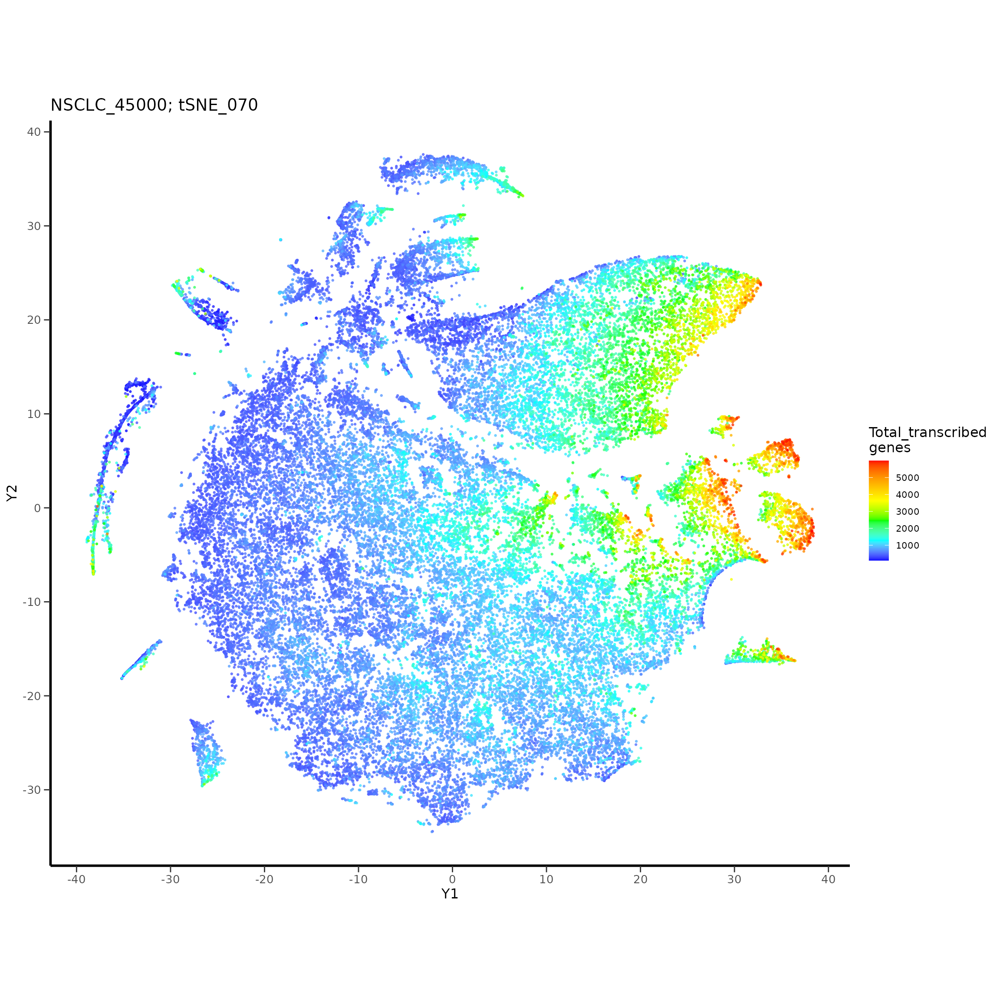
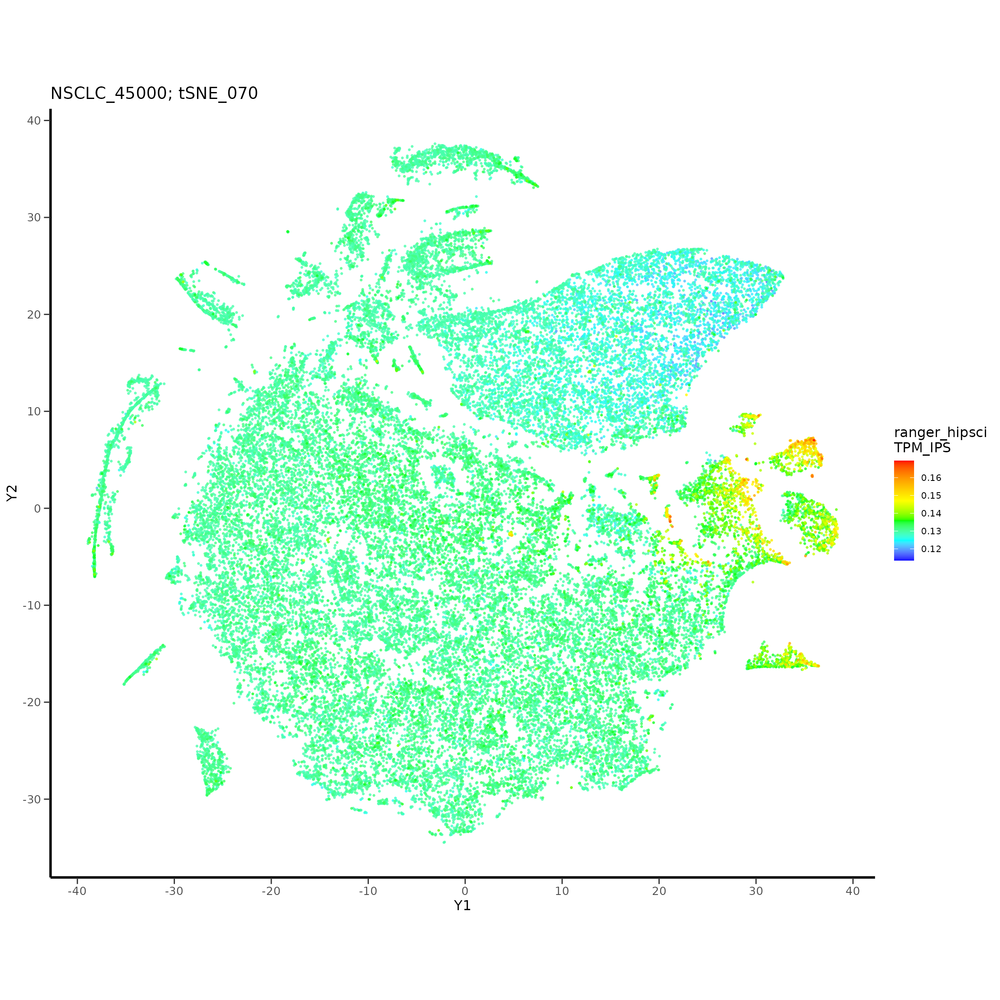
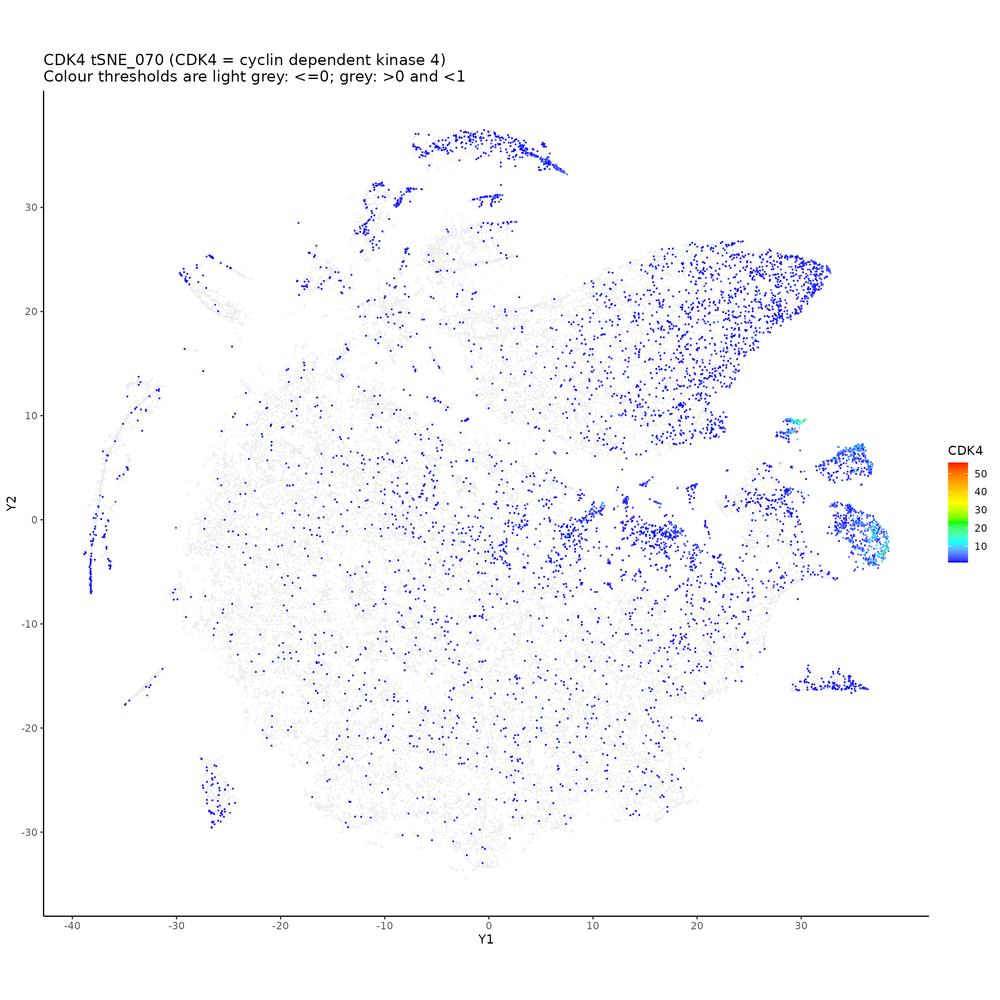
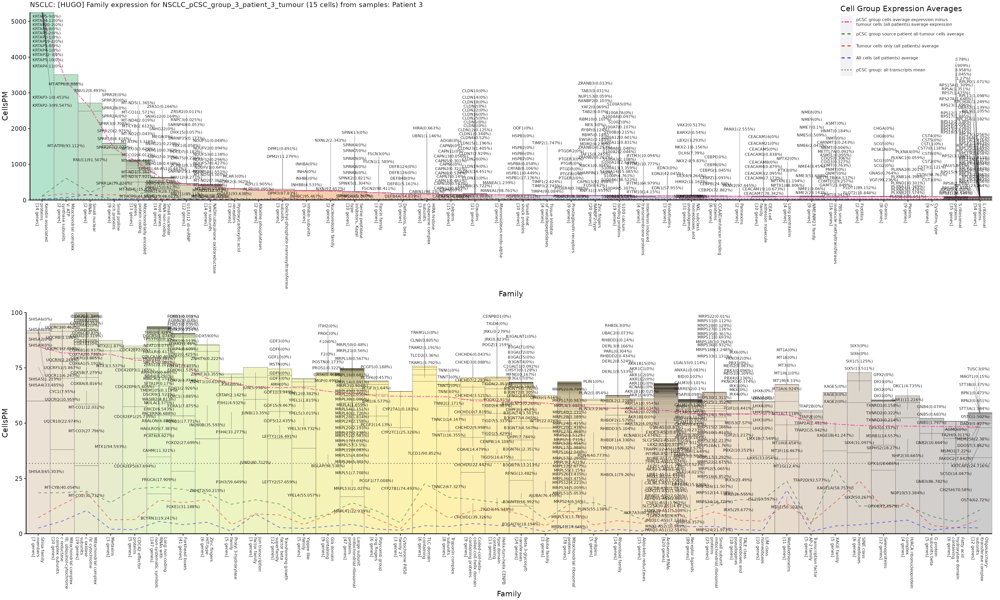

cscplots Tutorial 3
tutorial_3.RmdTutorial 3: Identifying and Characterising Cancer Stem Cells In NSCLC Single-Cell RNA-Seq
Tutorial 3 uses an NSCLC scRNA-Seq dataset published by Lambrechts et al. (Nature Medicine 2018). The original dataset contains 52,698 cells, but we’ll use 45,000 of these cells (randomly sampled cells) to make some of the computational methods used more tractable. Please contact that original authors to obtain the full 52,698 cells.
A pipeline will be constructed using functions from the cscplots package to perform the following steps.
- Generate a t-SNE using read counts for the NSCLC cells; predict stemness and other cell types in each of the cells, using iPSC RNA-Seq and melanoma scRNA-Seq; identify genes associated with higher stemness and higher transcription, in NSCLC cells.
- Use the t-SNE to select putative cancer stem cells (pCSCs), by using the stemness predictions and other information such as transcription gradients and predicted cell types.
- Detect preferential expression in the selected pCSCs using a Cells Per Million matrix, to find genes driving these cells.
Tutorial 3 Pipeline Overview:

Step 1: t-SNE Generation
Create the results directories, and load the NSCLC expression data included with this package:
library("Matrix")
library("biomaRt")
library("gtools")
library("Rtsne")
library("caret")
library("ranger")
library("e1071")
library("randomForest")
library("ggplot2")
library("ggrepel"); options(ggrepel.max.overlaps = Inf)
library("cscplots")
project_name <- "NSCLC_45000"
wd <- './' # set the working directory
saveDir <- paste0(wd, 'save/')
resultsBaseDir <- paste0('results/')
resultsDir <- paste0('results/', project_name, '/')
tSNEsDir <- paste0(resultsDir, 'tSNEs/')
pCSCsDir <- paste0(tSNEsDir, "pCSC_group_selection/")
prefExprDir <- paste0(resultsDir, "preferential_expression/")
dataDir <- paste0(wd, '../data/')
dir.create(saveDir, showWarnings = FALSE)
dir.create(resultsBaseDir, showWarnings = FALSE)
dir.create(resultsDir, showWarnings = FALSE)
dir.create(tSNEsDir, showWarnings = FALSE)
dir.create(pCSCsDir, showWarnings = FALSE)
dir.create(prefExprDir, showWarnings = FALSE)
dir.create(dataDir, showWarnings = FALSE)
# Combine the NSCLC data that's available with this package.
tCounts_NSCLC_45000 <- rbind(tCounts_NSCLC_1_15000, tCounts_NSCLC_15001_30000, tCounts_NSCLC_30001_45000)
tCounts_NSCLC_1_15000 <- NULL
tCounts_NSCLC_15001_30000 <- NULL
tCounts_NSCLC_30001_45000 <- NULL
tTPM_mela_4558 <- rbind(tTPM_mela_1_2500, tTPM_mela_2501_4558)
tTPM_mela_1_2500 <- NULL
tTPM_mela_2501_4558 <- NULLWe’re going to work with the raw read counts initially, but if you prefer, you can use TPMs. You can generate TPMs by uncommenting this:
#gene_lengths_NSCLC_45000[1:10] # Gene lengths for the NSCLC data are automatically available in this package
#transcript_lengths_NSCLC_45000[1:10] # Transcript lengths are also in this package
# Or to get the gene or transcript lengths from biomart:
#gene_names <- colnames(tCounts_NSCLC_45000)
#gene_lengths_NSCLC_45000 <- get_gene_lengths_using_gene_names(gene_names)
#transcript_lengths_NSCLC_45000 <- get_transcript_lengths_using_gene_names(gene_names)
#no_transcript_lengths_pos <- as.numeric(which(is.na(transcript_lengths_NSCLC_45000)))
#transcript_lengths_NSCLC_45000_no_lengths_removed <- transcript_lengths_NSCLC_45000[-(no_transcript_lengths_pos)]
#lengths_to_use <- transcript_lengths_NSCLC_45000_no_lengths_removed
#counts_to_use <- tCounts_NSCLC_45000[,-c(no_transcript_lengths_pos)]
#tTPM_NSCLC_45000 <- tpm_samplewise(counts_to_use, lengths_to_use)
#save(tTPM_NSCLC_45000, file = paste0(saveDir, "tTPM_NSCLC_45000.RData"))
##load(paste0(saveDir, "tTPM_NSCLC_45000.RData"))
#tTPM_NSCLC_45000 <- NULL # because we'll not use it hereWhen generating a t-SNE using the NSCLC scRNA-Seq expression matrix, the recommended perplexity parameter value to use is 70. However, you can use a list of perplexity values to generate multiple t-SNEs if you prefer.
Here we’ll use the raw counts for the input, but you could use TPMs (which can be generated as shown above).
perplexityValues <<- c(70)
perplexityValuesPrint <- add_zeros_to_perplexity_values(perplexityValues)
tSNE_run_names <- paste0("tSNE_", perplexityValuesPrint)
outDir <- tSNEsDirHowever, generating the t-SNE for the 45,000 NSCLC cells is computationally intensive. You can use a shortcut and use the following t-SNE info which is available in this package:
str(NSCLC_45000_counts_tSNE_results)
#> List of 1
#> $ Perplexity=70:'data.frame': 45000 obs. of 2 variables:
#> ..$ Y1: num [1:45000] 27.1341 0.0347 18.164 -5.5993 0.7671 ...
#> ..$ Y2: num [1:45000] -7.5 19 15.2 -27.5 26.2 ...To generate the t-SNE yourself:
set.seed(1) # for reproduction of results; comment for unfixed results
#NSCLC_45000_counts_tSNE_results <-
# run_all_tSNEs(perplexityValues, tCounts_NSCLC_45000, project_name, outDir, montage <- 0)
#save(NSCLC_45000_counts_tSNE_results, file = paste0(saveDir, "NSCLC_45000_counts_tSNE_results.RData"))
#load(paste0(saveDir, "NSCLC_45000_counts_tSNE_results.RData"))Now add the t-SNE results to a list. This data structure is used so that it’s possible to add further cohort’s t-SNE results later for concurrent analysis - as demonstrated in tutorial 1.
NSCLC_tSNE_list <- list()
NSCLC_tSNE_list[[1]] <- NSCLC_45000_counts_tSNE_results
names(NSCLC_tSNE_list)[1] <- project_nameStep 2: Cell Stemness and Other Cell Type Predictions
In the same way as shown in tutorials 1 and 2, each cell in the NSCLC population will be given a stemness score (relative to fibroblasts and mononuclear cells). This uses random forests trained on stem cell (iPSC) RNA-Seq expression data from HipSci. Below three random forest implementations are used, which you can use compare and contrast the stemness gradients, particularly when overlaid on the t-SNEs, but you could use just one or two.
number_of_genes_to_use <- 16000
# Put the NSCLC expression matrix in a list first:
NSCLC_tCounts_list <- list()
NSCLC_tCounts_list[[1]] <- tCounts_NSCLC_45000
names(NSCLC_tCounts_list)[1] <- "NSCLC_45000_counts"
NSCLC_stemness_prediction_DFs_lists <- list()
NSCLC_stemness_prediction_DFs_lists[[1]] <-
run_ML_stemness_predictors(model_type <- 'ranger',
NSCLC_tCounts_list, hipsci_training_data,
stemness_type <- 'hipsci', number_of_genes_to_use,
sample_data_type <- 'counts', resultsDir)
names(NSCLC_stemness_prediction_DFs_lists)[1] <- "ranger_hipsci_TPM"
NSCLC_stemness_prediction_DFs_lists[[2]] <-
run_ML_stemness_predictors(model_type <- 'rf',
NSCLC_tCounts_list, hipsci_training_data,
stemness_type <- 'hipsci', number_of_genes_to_use,
sample_data_type <- 'counts', resultsDir)
names(NSCLC_stemness_prediction_DFs_lists)[2] <- "rf_hipsci_TPM"
NSCLC_stemness_prediction_DFs_lists[[3]] <-
run_ML_stemness_predictors(model_type <- 'randomForest',
NSCLC_tCounts_list, hipsci_training_data,
stemness_type <- 'hipsci', number_of_genes_to_use,
sample_data_type <- 'counts', resultsDir)
names(NSCLC_stemness_prediction_DFs_lists)[3] <- "randomForest_hipsci_TPM"
save(NSCLC_stemness_prediction_DFs_lists, file = paste0(saveDir, "NSCLC_stemness_prediction_DFs_lists.RData"))
#load(paste0(saveDir, "NSCLC_stemness_prediction_DFs_lists.RData"))Additional information available in this package for the NSCLC cells are: - cell type annotations provided by the NSCLC dataset publishers; - each cell’s patient source (sample number); - each cell’s tumour location (“patient piece”); - PluriTest predicted stemness scores; - ESTIMATE generated scores for stromal and immune cells.
NSCLC_45000_additional_info[1:5,]
#> Combined_Pluritest_Score Samples Cell_type Patient_piece
#> TAAGTGCAGTAGTGCG_23 1.991112 5 Tumour Middle
#> CACACCTCACGAAATA_24 1.349034 5 Myeloid Normal
#> TAGAGCTTCACATACG_23 1.514655 5 Myeloid Middle
#> CCCTCCTCACCTGGTG_22 1.508521 5 T_cell Edge
#> ATCACGATCCCTGACT_23 2.323920 5 Tumour Middle
#> ESTIMATE_stromal_scores ESTIMATE_immune_scores
#> TAAGTGCAGTAGTGCG_23 169.9282 646.2285
#> CACACCTCACGAAATA_24 740.7100 1077.7239
#> TAGAGCTTCACATACG_23 673.3327 1770.3552
#> CCCTCCTCACCTGGTG_22 522.6086 1510.5415
#> ATCACGATCCCTGACT_23 413.4537 199.4386However, if you have scRNA-Seq without cell type annotations, we can predict cell types using another expression matrix if it has cell types annotations available (this is very similar to what we just did with the HipSci data). You can use the cscplots function run_ML_cellType_predictors() to do this. For illustration purposes, we could use the melanoma scRNA-Seq from Tirosh et al. that was used in tutorial 2, to predict cell types in the NSCLC cells. If you were working with a dataset other than NSCLC, you could use the NSCLC expression matrix combined with the NSCLC cell types to predict cell types also.
These predictions will take a while (~a few hours) though, and you can skip these predictions if you are not interested. They may however, help you to understand the cell population further. Additionally, you could use several random forest implementations as used above for stemness predictions, to allow comparison of their results to reinforce confidence in the predictions.
number_of_genes_to_use <- 16000
#number_of_genes_to_use <- 10000 # makes the computations slightly quicker, but 16000 is prefered
# Additional info available for the melanoma cells:
mela_4558_additional_info[1:5,]
#> Combined_Pluritest_Score Samples Mutation_status
#> Cy72_CD45_H02_S758_comb 1.637538 72 NRAS_Q61R
#> CY58_1_CD45_B02_S974_comb 1.444785 58 Wild_type
#> Cy71_CD45_D08_S524_comb 2.060787 71 NRAS_Q61L
#> Cy81_FNA_CD45_B01_S301_comb 2.350515 81 BRAF_V600E
#> Cy80_II_CD45_B07_S883_comb 2.278504 80 NRAS_Q61L
#> PD1_status PDL1_status Sex Preop_drug_types
#> Cy72_CD45_H02_S758_comb Unknown Unknown Female Immunotherapy
#> CY58_1_CD45_B02_S974_comb Unknown Unknown Female Immunotherapy
#> Cy71_CD45_D08_S524_comb Unknown Unknown Male None
#> Cy81_FNA_CD45_B01_S301_comb Unknown Unknown Female None
#> Cy80_II_CD45_B07_S883_comb Unknown Unknown Female None
#> Preop_total_drugs Postop_drugs Survival
#> Cy72_CD45_H02_S758_comb 4 None Alive
#> CY58_1_CD45_B02_S974_comb 1 None Alive
#> Cy71_CD45_D08_S524_comb 0 None Alive
#> Cy81_FNA_CD45_B01_S301_comb 0 None Alive
#> Cy80_II_CD45_B07_S883_comb 0 None Alive
#> Sites Sites_concise
#> Cy72_CD45_H02_S758_comb External iliac lymph node Lymph node
#> CY58_1_CD45_B02_S974_comb Subcutaneous leg lesion Subcutaneous
#> Cy71_CD45_D08_S524_comb Transverse colon Bowel
#> Cy81_FNA_CD45_B01_S301_comb Axillary lymph node Lymph node
#> Cy80_II_CD45_B07_S883_comb Axillary lymph node Lymph node
#> Sites_summary Cell_malignancy Cell_type Age
#> Cy72_CD45_H02_S758_comb Lymphoid No Bcell 57
#> CY58_1_CD45_B02_S974_comb Distant No Tcell 67
#> Cy71_CD45_D08_S524_comb Distant Yes Malignant 79
#> Cy81_FNA_CD45_B01_S301_comb Lymphoid Yes Malignant 43
#> Cy80_II_CD45_B07_S883_comb Lymphoid Yes Malignant 86
#> ESTIMATE_stromal_scores ESTIMATE_immune_scores
#> Cy72_CD45_H02_S758_comb 151.8619 1425.0562
#> CY58_1_CD45_B02_S974_comb 155.6125 1960.3669
#> Cy71_CD45_D08_S524_comb -539.6290 -388.5469
#> Cy81_FNA_CD45_B01_S301_comb -927.3360 -581.6889
#> Cy80_II_CD45_B07_S883_comb -976.0852 -507.3353
# Combine the melanoma cell type annotations with the melanoma expression matrix for use in predictions
mela_4558_cell_types <- mela_4558_additional_info$Cell_type
tTPM_mela_4558_with_cell_types <- cbind.data.frame(mela_4558_cell_types, tTPM_mela_4558)
colnames(tTPM_mela_4558_with_cell_types) <- c("Cell_type", colnames(tTPM_mela_4558))Run the cell type predictions:
# Cell type predictions using melanoma data
NSCLC_cell_type_prediction_DFs_lists <- list()
NSCLC_cell_type_prediction_DFs_lists[[1]] <-
run_ML_cellType_predictors(model_type <- 'ranger', NSCLC_tCounts_list,
cellTypeData <- tTPM_mela_4558_with_cell_types,
expressionData_type <- 'mela_cell_types', number_of_genes_to_use,
sample_data_type <- 'counts', resultsDir)
names(NSCLC_cell_type_prediction_DFs_lists)[1] <- "ranger_mela_cell_types"
save(NSCLC_cell_type_prediction_DFs_lists, file = paste0(saveDir, "NSCLC_cell_type_prediction_DFs_lists.RData"))
#load(paste0(saveDir, "NSCLC_cell_type_prediction_DFs_lists.RData"))
# By the way, you could use this dataframe to predict cell types in other cohorts using the NSCLC data:
#tCounts_NSCLC_45000_with_cell_types <- cbind.data.frame(NSCLC_45000_additional_info$Cell_type, tCounts_NSCLC_45000)
#colnames(tCounts_NSCLC_45000_with_cell_types) <- c("Cell_type", colnames(tCounts_NSCLC_45000))We can also use other cell annotations in the melanoma dataset to predict similar features in the NSCLC cells. For example, we could try that with “cell malignancy” annotations of the melanoma cells to predict the probabilities of NSCLC cells being maligant. Again, skip this if you want to.
# Combine the melanoma cell malignany annotations with the melanoma expression matrix for use in predictions
mela_4558_cell_malignancy <- mela_4558_additional_info$Cell_malignancy
tTPM_mela_4558_with_cell_malignancy <- cbind.data.frame(mela_4558_cell_malignancy, tTPM_mela_4558)
colnames(tTPM_mela_4558_with_cell_malignancy) <- c("Cell_type", colnames(tTPM_mela_4558))Run the cell malignancy predictions:
# Cell malignancy predictions using melanoma data:
NSCLC_cell_malignancy_prediction_DFs_lists <- list()
NSCLC_cell_malignancy_prediction_DFs_lists[[1]] <-
run_ML_cellType_predictors(model_type <- 'ranger', NSCLC_tCounts_list,
cellTypeData <- tTPM_mela_4558_with_cell_malignancy,
expressionData_type <- 'mela_cell_malignancy', number_of_genes_to_use,
sample_data_type <- 'counts', resultsDir)
names(NSCLC_cell_malignancy_prediction_DFs_lists)[1] <- "ranger_mela_cell_malignancy"
save(NSCLC_cell_malignancy_prediction_DFs_lists,
file = paste0(saveDir, "NSCLC_cell_malignancy_prediction_DFs_lists.RData"))
#load(paste0(saveDir, "NSCLC_cell_malignancy_prediction_DFs_lists.RData"))Step 3: Total Transcription & Total Transcribed Genes
Calculate total transcription (all expression in all transcripts) for each cell, and total transcribed genes (sum of all expression in all transcripts) for each cell; will be used later, e.g. to help evaluate the t-SNEs:
NSCLC_total_transcription_levels_list <- list()
NSCLC_total_transcribed_genes_list <- list()
cohort_index <- 1 # only 1 cohort being used in this project i.e. all 45000 NSCLC population cells
# from multiple patients
df <- tCounts_NSCLC_45000
#df <- tTPM_NSCLC_45000 # If you're using TPMs
total_transcription_levels <- rowSums(df)
total_transcribed_genes_vec <- vector()
for(i in 1:nrow(df)){
thisCount <- sum(df[i,] >= 1)
if(is.na(thisCount)){ cat("Is na\n") }; if(thisCount <= 0){ cat("0 or less\n") }
total_transcribed_genes_vec[[i]] <- thisCount
}
names(total_transcribed_genes_vec) <- rownames(df)
print(cor.test(as.numeric(total_transcribed_genes_vec), as.numeric(total_transcription_levels),
method="pearson"))
#>
#> Pearson's product-moment correlation
#>
#> data: as.numeric(total_transcribed_genes_vec) and as.numeric(total_transcription_levels)
#> t = 448.26, df = 44998, p-value < 2.2e-16
#> alternative hypothesis: true correlation is not equal to 0
#> 95 percent confidence interval:
#> 0.9021941 0.9055753
#> sample estimates:
#> cor
#> 0.9038988
NSCLC_total_transcription_levels_list[[cohort_index]] <- total_transcription_levels
NSCLC_total_transcribed_genes_list[[cohort_index]] <- total_transcribed_genes_vec
names(NSCLC_total_transcription_levels_list)[cohort_index] <- project_name
names(NSCLC_total_transcribed_genes_list)[cohort_index] <- project_name
df <- NULLStep 4: t-SNE Analysis
Similarly to in tutorials 1 & 2, we’ll use the stemness scores generated in step 2 to identify regions of higher predicted stemness in the t-SNEs. This will be compared against other information displayed in the t-SNEs, to select pCSCs. Identification of cells that have high transcription, high predicted stemness, and that are consistent with the t-SNE topology (e.g. cell clusters) are the aim. But depending on the tumour population that you are analysing, and the additional information available, you may adapt the features that you are using to identify cancer stem cells.
As always, it’s recommended to view plots in this tutorial using the high resolution tif files that are generated, which will help you to work more precisely with the cells.
4a): Annotate the t-SNEs
Add the cell scores previously generated to a t-SNE list for subsequent plotting and analysis:
NSCLC_tSNE_list_with_annotations <- list()
cohort_index <- 1 # only 1 cohort used in this project
tSNE_results_with_annotations_tmp <- NSCLC_tSNE_list[[cohort_index]]
tSNE_results_with_annotations_tmp <-
add_scores_to_tSNE_results(tSNE_results_with_annotations_tmp, perplexityValues,
scores <- as.numeric(NSCLC_total_transcription_levels_list[[cohort_index]]),
scoresName <- "Total_transcription")
tSNE_results_with_annotations_tmp <-
add_scores_to_tSNE_results(tSNE_results_with_annotations_tmp, perplexityValues,
as.numeric(NSCLC_total_transcribed_genes_list[[cohort_index]]),
"Total_transcribed_genes")
stemness_score_indices_to_use <- c(2,2,2) # use 2 for HipSci IPS predictions (1 for fibro & 3 for mononuclear)
for(i in 1:length(NSCLC_stemness_prediction_DFs_lists)){
tSNE_results_with_annotations_tmp <-
add_scores_to_tSNE_results(tSNE_results_with_annotations_tmp, perplexityValues,
NSCLC_stemness_prediction_DFs_lists[[i]][[cohort_index]][,stemness_score_indices_to_use[i]],
paste0(names(NSCLC_stemness_prediction_DFs_lists[i]), "_",
names(NSCLC_stemness_prediction_DFs_lists[[i]][[cohort_index]])[stemness_score_indices_to_use[i]]))
}
for(i in 1:length(NSCLC_cell_type_prediction_DFs_lists)){
for(j in 1:ncol(NSCLC_cell_type_prediction_DFs_lists[[i]][[cohort_index]])){ # do for all cell types
tSNE_results_with_annotations_tmp <-
add_scores_to_tSNE_results(tSNE_results_with_annotations_tmp, perplexityValues,
NSCLC_cell_type_prediction_DFs_lists[[i]][[cohort_index]][,j],
paste0(names(NSCLC_cell_type_prediction_DFs_lists[i]), "_",
names(NSCLC_cell_type_prediction_DFs_lists[[i]][[cohort_index]])[j]))
}
}
cell_malignancy_score_index_to_use <- 3 # use 3 for "Yes" malignancy predictions (1 for "Unresolved" & 2 for "No")
for(i in 1:length(NSCLC_cell_malignancy_prediction_DFs_lists)){
tSNE_results_with_annotations_tmp <-
add_scores_to_tSNE_results(tSNE_results_with_annotations_tmp, perplexityValues,
NSCLC_cell_malignancy_prediction_DFs_lists[[i]][[cohort_index]][,cell_malignancy_score_index_to_use[i]],
paste0(names(NSCLC_cell_malignancy_prediction_DFs_lists[i]), "_",
names(NSCLC_cell_malignancy_prediction_DFs_lists[[i]][[cohort_index]])[cell_malignancy_score_index_to_use[i]]))
}
NSCLC_tSNE_list_with_annotations[[cohort_index]] <- tSNE_results_with_annotations_tmp
names(NSCLC_tSNE_list_with_annotations)[cohort_index] <- names(NSCLC_tSNE_list)[cohort_index]
tSNE_results_with_annotations_tmp <- NULL
#save(NSCLC_tSNE_list_with_annotations, file = paste0(saveDir, "NSCLC_tSNE_list_with_annotations.RData"))4b): Plot t-SNE Cell Scores and Transcription Gradients
Plot the t-SNEs with stemness scores, transcription levels, and also predicted cell type scores and predicted cell malignancy scores if you generated them:
cohort_index <- 1
outDir <- tSNEsDir
for(i in 1:length(perplexityValues)){
for(j in 3:length(names(NSCLC_tSNE_list_with_annotations[[cohort_index]][[i]]))){ # 1:2 are the Y1 & Y2
# values so skip them
plot_scores(NSCLC_tSNE_list_with_annotations[[cohort_index]][[i]], "Y1", "Y2",
runName <- tSNE_run_names[i],
scoresName <- names(NSCLC_tSNE_list_with_annotations[[cohort_index]][[i]])[j],
datasetName <- names(NSCLC_tSNE_list_with_annotations)[cohort_index], outDir,
labelPositions <- NULL, colourPositions <- NULL, highestOnTop <- TRUE)
}
}

4c): Additional Info t-SNE Plots
Additional cell annotations will now be added to the annotated t-SNE list, for subsequent display on the t-SNE i.e. sample numbers, tumour location info and cell types from the NSCLC publishers, and also ESTIMATE immune/stromal and PluriTest stemness prediction scores:
cohort_index <- 1 # only 1 cohort used in this project
# Sample numbers
NSCLC_tSNE_list_with_annotations[[cohort_index]] <-
add_scores_to_tSNE_results(NSCLC_tSNE_list_with_annotations[[cohort_index]], perplexityValues,
as.factor(NSCLC_45000_additional_info$Samples), "Samples")
# Tumour location
NSCLC_tSNE_list_with_annotations[[cohort_index]] <-
add_scores_to_tSNE_results(NSCLC_tSNE_list_with_annotations[[cohort_index]], perplexityValues,
NSCLC_45000_additional_info$Patient_piece, "Patient_piece")
# Cell types, and immune and stromal scores
NSCLC_tSNE_list_with_annotations[[cohort_index]] <-
add_scores_to_tSNE_results(NSCLC_tSNE_list_with_annotations[[cohort_index]], perplexityValues,
NSCLC_45000_additional_info$Cell_type, "Cell_type")
NSCLC_tSNE_list_with_annotations[[cohort_index]] <-
add_scores_to_tSNE_results(NSCLC_tSNE_list_with_annotations[[cohort_index]], perplexityValues,
NSCLC_45000_additional_info$ESTIMATE_stromal_scores, "ESTIMATE_stromal_scores")
NSCLC_tSNE_list_with_annotations[[cohort_index]] <-
add_scores_to_tSNE_results(NSCLC_tSNE_list_with_annotations[[cohort_index]], perplexityValues,
NSCLC_45000_additional_info$ESTIMATE_immune_scores, "ESTIMATE_immune_scores")
# PluriTest scores
NSCLC_tSNE_list_with_annotations[[cohort_index]] <-
add_scores_to_tSNE_results(NSCLC_tSNE_list_with_annotations[[cohort_index]], perplexityValues,
NSCLC_45000_additional_info$Combined_Pluritest_Score, "Combined_PluriTest_Score")
save(NSCLC_tSNE_list_with_annotations, file = paste0(saveDir, "NSCLC_tSNE_list_with_annotations.RData"))
#load(paste0(saveDir, "NSCLC_tSNE_list_with_annotations.RData"))Print the t-SNEs with cell scores, etc. just added (tifs are written to results/NSCLC_45000/tSNEs/):
cohort_index <- 1
perpl_index <- 1 # if only 1 perplexity value was used, i.e. perplexity = 70, set to 1
outDir <- tSNEsDir
run_name <- tSNE_run_names[perpl_index]
plot_categories(NSCLC_tSNE_list_with_annotations[[cohort_index]][[perpl_index]], "Y1", "Y2", run_name,
"Samples", names(NSCLC_tSNE_list_with_annotations)[cohort_index], outDir)#> NULL
plot_categories(NSCLC_tSNE_list_with_annotations[[cohort_index]][[perpl_index]], "Y1", "Y2", run_name,
"Patient_piece", names(NSCLC_tSNE_list_with_annotations)[cohort_index], outDir)#> NULL
plot_categories(NSCLC_tSNE_list_with_annotations[[cohort_index]][[perpl_index]], "Y1", "Y2", run_name,
"Cell_type", names(NSCLC_tSNE_list_with_annotations)[cohort_index], outDir)#> NULL
plot_scores(NSCLC_tSNE_list_with_annotations[[cohort_index]][[perpl_index]], "Y1", "Y2", run_name,
"ESTIMATE_stromal_scores", names(NSCLC_tSNE_list_with_annotations)[cohort_index],
outDir, NULL, NULL, highestOnTop <- TRUE)#> NULL
plot_scores(NSCLC_tSNE_list_with_annotations[[cohort_index]][[perpl_index]], "Y1", "Y2", run_name,
"ESTIMATE_immune_scores", names(NSCLC_tSNE_list_with_annotations)[cohort_index],
outDir, NULL, NULL, highestOnTop <- TRUE)#> NULL
plot_scores(NSCLC_tSNE_list_with_annotations[[cohort_index]][[perpl_index]], "Y1", "Y2", run_name,
"Combined_PluriTest_Score", names(NSCLC_tSNE_list_with_annotations)[cohort_index],
outDir, NULL, NULL, highestOnTop <- TRUE)
#> NULL4d): CDK t-SNEs
Viewing CDK associated expression in the t-SNEs can be helpful in identifying regions of interest in the NSCLC:
CDKsDir <- paste0(tSNEsDir, "CDKs/")
dir.create(CDKsDir, showWarnings = FALSE)
#CDKs available in this dataset
colnames(tCounts_NSCLC_45000)[grep("^CDK", colnames(tCounts_NSCLC_45000))]
#> [1] "CDK10" "CDK1" "CDK11A" "CDK11B" "CDK12"
#> [6] "CDK13" "CDK14" "CDK15" "CDK16" "CDK17"
#> [11] "CDK18" "CDK19" "CDK20" "CDK2" "CDK2AP1"
#> [16] "CDK2AP2" "CDK4" "CDK5" "CDK5R1" "CDK5R2"
#> [21] "CDK5RAP1" "CDK5RAP2" "CDK5RAP3" "CDK6" "CDK7"
#> [26] "CDK8" "CDK9" "CDKAL1" "CDKL1" "CDKL2"
#> [31] "CDKL3" "CDKL4" "CDKL5" "CDKN1A" "CDKN1B"
#> [36] "CDKN1C" "CDKN2A" "CDKN2AIP" "CDKN2AIPNL" "CDKN2B"
#> [41] "CDKN2B-AS1" "CDKN2C" "CDKN2D" "CDKN3"
# For brevity, just a few are shown here, but others are also interesting.
#gene_names_to_print <- colnames(tCounts_NSCLC_45000)[grep("^CDK", colnames(tCounts_NSCLC_45000))] # To plot all CDKs available
gene_names_to_print <- c("CDK1", "CDK4", "CDKN2A")
print_tSNE_coloured_by_gene(gene_names_to_print, NSCLC_tSNE_list_with_annotations[[cohort_index]][[perpl_index]],
tCounts_NSCLC_45000, run_name, outDir <- CDKsDir, point_size <- 0.1,
all_HUGO_abbreviations_and_fullnames, dataDir)
#> CDK1 [cyclin dependent kinase 1]#> CDK4 [cyclin dependent kinase 4]
#> CDKN2A [cyclin dependent kinase inhibitor 2A]
#> NULL4e): Selection of Tumour Cell Groups and Clusters
Looking at the t-SNEs that we’ve generated so far, there are tumour cells that group by sample/patient, on the right side of the t-SNE we’re using here. These groups of tumour cells each have regions within them of high transcription (total transcription and total transcribed genes) and higher predicted stemness. These areas also overlap with higher predicted malignancy if you created those scores.
We’ll select these groups of tumour cells, and also all of the tumour cells for each patient. These groups of tumour cells can be used later for further analysis, e.g. to compare against pCSCs selected from within them for preferential expression analysis.
Select the tumour cells for each patient:
NSCLC_45000_tumour_pos <- which(NSCLC_45000_additional_info[,3] == 'Tumour')
patient1_pos <- which(NSCLC_45000_additional_info[,2] == 1)
patient2_pos <- which(NSCLC_45000_additional_info[,2] == 2)
patient3_pos <- which(NSCLC_45000_additional_info[,2] == 3)
patient4_pos <- which(NSCLC_45000_additional_info[,2] == 4)
patient5_pos <- which(NSCLC_45000_additional_info[,2] == 5)
patient1_tumour_pos <- patient1_pos[which(patient1_pos %in% NSCLC_45000_tumour_pos)]
patient2_tumour_pos <- patient2_pos[which(patient2_pos %in% NSCLC_45000_tumour_pos)]
patient3_tumour_pos <- patient3_pos[which(patient3_pos %in% NSCLC_45000_tumour_pos)]
patient4_tumour_pos <- patient4_pos[which(patient4_pos %in% NSCLC_45000_tumour_pos)]
patient5_tumour_pos <- patient5_pos[which(patient5_pos %in% NSCLC_45000_tumour_pos)]
NSCLC_patient_tumour_info <- list()
NSCLC_patient_tumour_info[[1]] <- patient1_tumour_pos
NSCLC_patient_tumour_info[[2]] <- patient2_tumour_pos
NSCLC_patient_tumour_info[[3]] <- patient3_tumour_pos
NSCLC_patient_tumour_info[[4]] <- patient4_tumour_pos
NSCLC_patient_tumour_info[[5]] <- patient5_tumour_pos
names(NSCLC_patient_tumour_info) <- c('patient1_tumour_pos', 'patient2_tumour_pos', 'patient3_tumour_pos',
'patient4_tumour_pos', 'patient5_tumour_pos')Manually select the groups of tumour cells for each patient/sample on the right side of the t-SNE:
cohort_index <- 1
perpl_index <- 1
outDir <- tSNEsDir
run_name <- tSNE_run_names[perpl_index]
# All patient 1 tumour cells:
plot_scores_with_grid(NSCLC_tSNE_list_with_annotations[[cohort_index]][[perpl_index]], "Y1", "Y2", run_name,
"Total_transcription", names(NSCLC_tSNE_list_with_annotations)[cohort_index],
outDir, NULL, patient1_tumour_pos, highestOnTop <- TRUE)#> NULL
# Select only those on the right side of the t-SNE:
cluster_box_pos_tmp <-
select_tSNE_box_positions(tSNE_info = NSCLC_tSNE_list_with_annotations[[cohort_index]][[perpl_index]],
Y1_borders = c(27,40), Y2_borders = c(7,9.1))
patient1_malignant_cluster_pos <- patient1_tumour_pos[which(patient1_tumour_pos %in% cluster_box_pos_tmp)]
plot_scores(NSCLC_tSNE_list_with_annotations[[cohort_index]][[perpl_index]], "Y1", "Y2", run_name,
"Total_transcription", names(NSCLC_tSNE_list_with_annotations)[cohort_index],
outDir, NULL, patient1_malignant_cluster_pos, highestOnTop <- TRUE)
#> NULL
# Select patient 2 malignant cells group:
plot_scores_with_grid(NSCLC_tSNE_list_with_annotations[[cohort_index]][[perpl_index]], "Y1", "Y2", run_name,
"Total_transcription", names(NSCLC_tSNE_list_with_annotations)[cohort_index],
outDir, NULL, patient2_tumour_pos, highestOnTop <- TRUE)#> NULL
cluster_box_pos_tmp <-
select_tSNE_box_positions(tSNE_info = NSCLC_tSNE_list_with_annotations[[cohort_index]][[perpl_index]],
Y1_borders = c(27.5,31), Y2_borders = c(8,10))
patient2_malignant_cluster_pos <- patient2_tumour_pos[which(patient2_tumour_pos %in% cluster_box_pos_tmp)]
plot_scores(NSCLC_tSNE_list_with_annotations[[cohort_index]][[perpl_index]], "Y1", "Y2", run_name,
"Total_transcription", names(NSCLC_tSNE_list_with_annotations)[cohort_index],
outDir, NULL, patient2_malignant_cluster_pos, highestOnTop <- TRUE)#> NULL
# Patient 3 malignant cells group:
plot_scores_with_grid(NSCLC_tSNE_list_with_annotations[[cohort_index]][[perpl_index]], "Y1", "Y2", run_name,
"Total_transcription", names(NSCLC_tSNE_list_with_annotations)[cohort_index],
outDir, NULL, patient3_tumour_pos, highestOnTop <- TRUE)#> NULL
cluster_box_pos_tmp <-
select_tSNE_box_positions(tSNE_info = NSCLC_tSNE_list_with_annotations[[cohort_index]][[perpl_index]],
Y1_borders = c(31,38), Y2_borders = c(3,8))
patient3_malignant_cluster_pos <- patient3_tumour_pos[which(patient3_tumour_pos %in% cluster_box_pos_tmp)]
plot_scores(NSCLC_tSNE_list_with_annotations[[cohort_index]][[perpl_index]], "Y1", "Y2", run_name,
"Total_transcription", names(NSCLC_tSNE_list_with_annotations)[cohort_index],
outDir, NULL, patient3_malignant_cluster_pos, highestOnTop <- TRUE)#> NULL
# Patient 4 malignant cells group:
plot_scores_with_grid(NSCLC_tSNE_list_with_annotations[[cohort_index]][[perpl_index]], "Y1", "Y2", run_name,
"Total_transcription", names(NSCLC_tSNE_list_with_annotations)[cohort_index],
outDir, NULL, patient4_tumour_pos, highestOnTop <- TRUE)#> NULL
cluster_box_pos_tmp <-
select_tSNE_box_positions(tSNE_info = NSCLC_tSNE_list_with_annotations[[cohort_index]][[perpl_index]],
Y1_borders = c(32,39), Y2_borders = c(-5,2))
patient4_malignant_cluster_pos <- patient4_tumour_pos[which(patient4_tumour_pos %in% cluster_box_pos_tmp)]
plot_scores(NSCLC_tSNE_list_with_annotations[[cohort_index]][[perpl_index]], "Y1", "Y2", run_name,
"Total_transcription", names(NSCLC_tSNE_list_with_annotations)[cohort_index],
outDir, NULL, patient4_malignant_cluster_pos, highestOnTop <- TRUE)#> NULL
# Patient 5 malignant cells group:
plot_scores_with_grid(NSCLC_tSNE_list_with_annotations[[cohort_index]][[perpl_index]], "Y1", "Y2", run_name,
"Total_transcription", names(NSCLC_tSNE_list_with_annotations)[cohort_index],
outDir, NULL, patient5_tumour_pos, highestOnTop <- TRUE)
#> NULL
cluster_box_pos_tmp <-
select_tSNE_box_positions(tSNE_info = NSCLC_tSNE_list_with_annotations[[cohort_index]][[perpl_index]],
Y1_borders = c(21,34), Y2_borders = c(-13,6))
patient5_malignant_cluster_pos <- patient5_tumour_pos[which(patient5_tumour_pos %in% cluster_box_pos_tmp)]
plot_scores(NSCLC_tSNE_list_with_annotations[[cohort_index]][[perpl_index]], "Y1", "Y2", run_name,
"Total_transcription", names(NSCLC_tSNE_list_with_annotations)[cohort_index],
outDir, NULL, patient5_malignant_cluster_pos, highestOnTop <- TRUE)#> NULL
NSCLC_malignant_clusters_info <- list()
NSCLC_malignant_clusters_info[[1]] <- patient1_malignant_cluster_pos
NSCLC_malignant_clusters_info[[2]] <- patient2_malignant_cluster_pos
NSCLC_malignant_clusters_info[[3]] <- patient3_malignant_cluster_pos
NSCLC_malignant_clusters_info[[4]] <- patient4_malignant_cluster_pos
NSCLC_malignant_clusters_info[[5]] <- patient5_malignant_cluster_pos
names(NSCLC_malignant_clusters_info) <- c('NSCLC_malignant_cluster1', 'NSCLC_malignant_cluster2',
'NSCLC_malignant_cluster3', 'NSCLC_malignant_cluster4',
'NSCLC_malignant_cluster5')If you didn’t have tumour annotations in your scRNA-Seq dataset, you could use cell type predictions instead, such as using the melanoma cell types info:
NSCLC_45000_predicted_malignant_pos <- which(NSCLC_cell_malignancy_prediction_DFs_lists[[1]][[1]][,3] > 0.3)
plot_scores(NSCLC_tSNE_list_with_annotations[[1]][[1]], "Y1", "Y2", run_name, "Total_transcription",
names(NSCLC_tSNE_list_with_annotations)[1], outDir, NULL, NSCLC_45000_predicted_malignant_pos,
highestOnTop <- TRUE)#> NULL4f): Stemness Correlations
Now that we have some clusters of malignant cells from different patients, let’s look at the stemness correlations within each of them, to find genes highly correlated with predicted stemness.
cohort_index <- 1
# Transcripts correlated with predicted stemness:
scores_to_use_list <- list()
for(i in 1:length(NSCLC_stemness_prediction_DFs_lists)){
scores_to_use_list[[i]] <- NSCLC_stemness_prediction_DFs_lists[[i]][[cohort_index]]
}
names(scores_to_use_list) <- names(NSCLC_stemness_prediction_DFs_lists)You can examine different subsets of cells. For example, we can look inside all tumour cells for each patient, or within each of the malignant cell groups that were selected:
#NSCLC_clusters_info <- NSCLC_patient_tumour_info # Use this for all tumour cells per patient
NSCLC_clusters_info <- NSCLC_malignant_clusters_info
NSCLC_stemness_correlations_list <- list()
for(i in 1:length(NSCLC_clusters_info)){
cat(paste0("Cluster = ", names(NSCLC_clusters_info)[i], "\n"))
tExprMatr_to_use <- tCounts_NSCLC_45000[NSCLC_clusters_info[[i]],]
for(k in 1:length(scores_to_use_list)){
score_to_use_index <- which(names(scores_to_use_list[[k]]) == 'IPS') # for HipSci IPS predictions
# (vs fibro & mononuclear)
scores_to_use <- scores_to_use_list[[k]][,score_to_use_index][NSCLC_clusters_info[[i]]]
NSCLC_stemness_correlations_list[[length(NSCLC_stemness_correlations_list)+1]] <-
get_expression_scores_correlations(tExprMatr_to_use, scores_to_use)
names(NSCLC_stemness_correlations_list)[length(NSCLC_stemness_correlations_list)] <-
paste0(names(NSCLC_clusters_info)[i], "; ", names(scores_to_use_list)[k])
cat(paste0(run_name, "; ", names(scores_to_use_list)[k], ":\n"))
cat(paste0("\nPositive correlations (top 10):\n"))
print(NSCLC_stemness_correlations_list[[length(NSCLC_stemness_correlations_list)]][[1]][1:10])
cat(paste0("\nNegative correlations (top 10):\n"))
print(NSCLC_stemness_correlations_list[[length(NSCLC_stemness_correlations_list)]][[2]][1:10])
cat("\n")
}
}
#> Cluster = NSCLC_malignant_cluster1
#> tSNE_070; ranger_hipsci_TPM:
#>
#> Positive correlations (top 10):
#> CMC2 RBX1 TMBIM6 PSMA1 ETFB SRSF9 RPA2 CD151
#> 0.6183706 0.6127188 0.6106691 0.5934751 0.5817899 0.5795623 0.5758795 0.5727046
#> REXO2 CYB5R3
#> 0.5726995 0.5712639
#>
#> Negative correlations (top 10):
#> KMT2D PPP1R37 AP4M1 APOL2 SLC35D2 PCDHB10
#> -0.4359486 -0.3392593 -0.3357678 -0.3336006 -0.3245674 -0.3155265
#> PGBD4 ANKMY1 PLAUR RP6-65G23.5
#> -0.3155265 -0.3115638 -0.3111348 -0.3017508
#>
#> tSNE_070; rf_hipsci_TPM:
#>
#> Positive correlations (top 10):
#> UNC119 ATP5G3 MYEOV2 MRPL4 SAP18 NDUFB10 PSMB1 NDUFS7
#> 0.6495795 0.6246321 0.5969438 0.5950545 0.5806764 0.5752335 0.5739095 0.5706296
#> SDHC LAMTOR1
#> 0.5671184 0.5615432
#>
#> Negative correlations (top 10):
#> ZMIZ2 SH3KBP1 PDE4C PLAUR NCALD VEGFA ANGPTL4
#> -0.3517708 -0.3413825 -0.3372386 -0.3358673 -0.3312764 -0.3224426 -0.3222916
#> LINC01123 PLAU LARS2
#> -0.3213768 -0.3192618 -0.3174475
#>
#> tSNE_070; randomForest_hipsci_TPM:
#>
#> Positive correlations (top 10):
#> SRSF9 UQCR10 TMEM50A ATG101 ROGDI ACTN1 HSF1 SPATA20
#> 0.6193439 0.5790251 0.5716361 0.5682137 0.5646422 0.5620615 0.5605324 0.5601607
#> LSM4 EMG1
#> 0.5547375 0.5518750
#>
#> Negative correlations (top 10):
#> ZNF579 CNNM4 LIG3 GCNT2 CRIPAK RP11-666O2.2
#> -0.3474763 -0.3459094 -0.3428823 -0.3217373 -0.3213768 -0.3213768
#> NUDT11 CTC-479C5.12 UBE3D WDFY3
#> -0.3147301 -0.3056651 -0.3036198 -0.3002882
#>
#> Cluster = NSCLC_malignant_cluster2
#> tSNE_070; ranger_hipsci_TPM:
#>
#> Positive correlations (top 10):
#> MYDGF STAP2 TIMM22 CFL1 C14orf166 CD9 SDHC BANF1
#> 0.5390528 0.5209031 0.5092547 0.5086818 0.5069502 0.5015589 0.4963556 0.4956891
#> NDFIP2 TAX1BP3
#> 0.4944985 0.4915588
#>
#> Negative correlations (top 10):
#> ZNF200 B3GNT8 TRBC2 B3GNT9 SLC16A10 PLS3-AS1 TMEM161B
#> -0.3345475 -0.3296880 -0.3158550 -0.2951054 -0.2812723 -0.2738289 -0.2709601
#> USP49 CTBP1-AS2 FAM43A
#> -0.2707120 -0.2666531 -0.2658919
#>
#> tSNE_070; rf_hipsci_TPM:
#>
#> Positive correlations (top 10):
#> STOML2 ARPC1A PGAM1 YBX1 MRPL37 MLF2 PARL EIF5A
#> 0.5965714 0.5891647 0.5841143 0.5776399 0.5762852 0.5749432 0.5707864 0.5670836
#> NGRN FAH
#> 0.5638178 0.5588472
#>
#> Negative correlations (top 10):
#> TNNT1 ZNF766 HCAR2 SCAF4 TYW1B
#> -0.3740700 -0.3298526 -0.2878235 -0.2872127 -0.2844117
#> ALG12 FBXO33 CBLN3 CTC-444N24.11 RNF39
#> -0.2754779 -0.2655761 -0.2606005 -0.2546477 -0.2524535
#>
#> tSNE_070; randomForest_hipsci_TPM:
#>
#> Positive correlations (top 10):
#> TAX1BP3 DPP7 NDUFB9 RCE1 MYDGF RAC1 ATP6V0B CD63
#> 0.5572696 0.5301971 0.5200110 0.5193008 0.5113409 0.5113365 0.4929049 0.4925454
#> RPL3 RPS4X
#> 0.4913636 0.4828680
#>
#> Negative correlations (top 10):
#> ZNF200 USP33 CTD-2553L13.10 C6orf226 STXBP3
#> -0.3154985 -0.3091538 -0.3035045 -0.2788763 -0.2738758
#> CCDC67 KLHL22 TIMM21 CCHCR1 TNNT1
#> -0.2738289 -0.2709601 -0.2694969 -0.2611772 -0.2585714
#>
#> Cluster = NSCLC_malignant_cluster3
#> tSNE_070; ranger_hipsci_TPM:
#>
#> Positive correlations (top 10):
#> MYL6 GPX4 MT-CO2 MT-CYB TSPO OAZ1 RPS9 RPLP1
#> 0.5983753 0.5890842 0.5822982 0.5808419 0.5807249 0.5805695 0.5804950 0.5795641
#> SERF2 MT-ND4
#> 0.5761640 0.5748099
#>
#> Negative correlations (top 10):
#> KHDC1 LINC01191 AP000695.4 HULC PALM3 ADPRH AC009950.2
#> -0.1409134 -0.1241711 -0.1199456 -0.1199456 -0.1189406 -0.1185291 -0.1171792
#> HOXA5 ZKSCAN7 ANKDD1A
#> -0.1158292 -0.1144792 -0.1123192
#>
#> tSNE_070; rf_hipsci_TPM:
#>
#> Positive correlations (top 10):
#> COX6C ATP5L EIF3K HINT1 MT-ND1 MT-CO2 RPS11 MT-ND4
#> 0.4661065 0.4616056 0.4586435 0.4506175 0.4495311 0.4444114 0.4433432 0.4416296
#> MT-CYB MT-ND5
#> 0.4403065 0.4398200
#>
#> Negative correlations (top 10):
#> AC009120.11 RP11-54O7.17 RP1-239B22.5 SSC4D FAM86B1
#> -0.1412090 -0.1407205 -0.1395445 -0.1358090 -0.1285237
#> PCSK6-AS1 CCDC157 RP11-672L10.6 RP11-380O24.1 PDE6G
#> -0.1261988 -0.1252171 -0.1249183 -0.1247834 -0.1231191
#>
#> tSNE_070; randomForest_hipsci_TPM:
#>
#> Positive correlations (top 10):
#> RPL35A RPS18 PFDN5 RPS9 TCEB2 RPS15 FAU RPS14
#> 0.4275312 0.4186493 0.4148316 0.4104216 0.4018611 0.3994986 0.3990034 0.3981494
#> RPL23A SERF2
#> 0.3974214 0.3968971
#>
#> Negative correlations (top 10):
#> ADCY7 CTD-2308L22.1 SCIMP APOBEC3A FGD2
#> -0.1620053 -0.1585295 -0.1567143 -0.1459334 -0.1441047
#> AGPAT4 KLHL25 MNDA LINC01431 POLR2J2
#> -0.1428224 -0.1400078 -0.1386733 -0.1347290 -0.1339253
#>
#> Cluster = NSCLC_malignant_cluster4
#> tSNE_070; ranger_hipsci_TPM:
#>
#> Positive correlations (top 10):
#> RPL30 RPL23A RPL8 RPS18 IDH2 RPL37A RPS16 RPS9
#> 0.4645068 0.4548158 0.4544106 0.4510148 0.4505274 0.4475255 0.4475043 0.4467213
#> RPS2 RPL29
#> 0.4426969 0.4412592
#>
#> Negative correlations (top 10):
#> PARVG RP11-473M20.5 RP11-53I6.3 ACSL6 CTD-2653M23.3
#> -0.10376745 -0.10168210 -0.09939838 -0.09525425 -0.09377061
#> AC145110.1 LINC00637 CTD-2001C12.1 PIRT FCGR3A
#> -0.09348938 -0.09280896 -0.09164913 -0.09154354 -0.09131313
#>
#> tSNE_070; rf_hipsci_TPM:
#>
#> Positive correlations (top 10):
#> PPDPF DSTN OST4 PGK1 RPS4X CXXC5 FKBP1A RPS7
#> 0.3191864 0.3132218 0.3123411 0.3085210 0.3020248 0.2922232 0.2916322 0.2915593
#> RPS21 SDHA
#> 0.2872304 0.2866697
#>
#> Negative correlations (top 10):
#> CXCL10 CXCL11 ISG20 XAF1 ZBP1 ISG15
#> -0.1870627 -0.1787527 -0.1638297 -0.1593232 -0.1482438 -0.1450785
#> CD38 CD2 VNN3 RP11-1E22.1
#> -0.1402588 -0.1370190 -0.1334571 -0.1310512
#>
#> tSNE_070; randomForest_hipsci_TPM:
#>
#> Positive correlations (top 10):
#> ARPC5 PTMA RPS2 H2AFY XRCC5 TMEM106C HNRNPA0 DSTN
#> 0.4253602 0.4217566 0.4192618 0.4147765 0.4103759 0.4059917 0.4019911 0.4013131
#> RPS21 RPS17
#> 0.4003146 0.3985455
#>
#> Negative correlations (top 10):
#> SAMSN1 IL10RA TYMP CXCL11 TRBC2 CD3E PTPRC
#> -0.1439377 -0.1423372 -0.1378065 -0.1304724 -0.1297264 -0.1296034 -0.1277653
#> HGH1 LAG3 VNN1
#> -0.1205575 -0.1200520 -0.1198005
#>
#> Cluster = NSCLC_malignant_cluster5
#> tSNE_070; ranger_hipsci_TPM:
#>
#> Positive correlations (top 10):
#> RPL13 RPS8 RPL30 RPL11 FAU RPS27A RPS20 RPLP2
#> 0.6636049 0.6549729 0.6500882 0.6490674 0.6470173 0.6460950 0.6453705 0.6441644
#> SERF2 RPL27A
#> 0.6440229 0.6411402
#>
#> Negative correlations (top 10):
#> ZSCAN23 RP11-290F5.2 RP11-798L4.1 IGLV6-57 ATCAY
#> -0.06959515 -0.06478427 -0.05684212 -0.05671668 -0.05665846
#> ZNF888 RP11-367N14.2 OPRD1 COL11A2 RP11-403A21.1
#> -0.05656663 -0.05537264 -0.05491793 -0.05441794 -0.05440865
#>
#> tSNE_070; rf_hipsci_TPM:
#>
#> Positive correlations (top 10):
#> RPS8 RPL13 SERF2 RPL29 RPS27A RPL15 RPS16 RPLP2
#> 0.4828221 0.4773000 0.4712413 0.4582275 0.4564988 0.4549420 0.4543811 0.4542686
#> RPS15A RPL30
#> 0.4525606 0.4518974
#>
#> Negative correlations (top 10):
#> PTPN22 IFITM1 SLCO4A1-AS1 AC092580.3 ASB2
#> -0.09088081 -0.07676279 -0.07388051 -0.06861911 -0.06850439
#> LINC00473 RP11-1000B6.5 RP11-508N22.13 AC005754.8 SLC1A6
#> -0.06694330 -0.06682905 -0.06632872 -0.06608450 -0.06244670
#>
#> tSNE_070; randomForest_hipsci_TPM:
#>
#> Positive correlations (top 10):
#> SERF2 LINC01420 SFTA2 MT-ATP6 MT-CO1 SPINT2 MT-ND4 MT-CO2
#> 0.4435837 0.4346487 0.4210716 0.4199587 0.4188746 0.4138101 0.4129645 0.4102450
#> UQCRH CST3
#> 0.4013455 0.4001113
#>
#> Negative correlations (top 10):
#> SERPINB3 PARD3-AS1 ACRBP SERPINB4 CST7 ZNF564
#> -0.09443916 -0.08592393 -0.08057027 -0.07987555 -0.07793383 -0.07490313
#> TYMP AQP9 UNQ6494 SLAMF1
#> -0.07107012 -0.06870599 -0.06773399 -0.06708496We can also look at correlations with other features of the data, e.g. cell malignancy predictions:
# Transcripts correlated with predicted cell malignancy:
scores_to_use_list <- list()
for(i in 1:length(NSCLC_cell_malignancy_prediction_DFs_lists)){
scores_to_use_list[[i]] <- NSCLC_cell_malignancy_prediction_DFs_lists[[i]][[cohort_index]]
}
names(scores_to_use_list) <- names(NSCLC_cell_malignancy_prediction_DFs_lists)
#NSCLC_clusters_info <- NSCLC_patient_tumour_info
NSCLC_clusters_info <- NSCLC_malignant_clusters_info
NSCLC_predicted_malignancy_correlations_list <- list()
for(i in 1:length(NSCLC_clusters_info)){
cat(paste0("Cluster = ", names(NSCLC_clusters_info)[i], "\n"))
tExprMatr_to_use <- tCounts_NSCLC_45000[NSCLC_clusters_info[[i]],]
for(k in 1:length(scores_to_use_list)){
score_to_use_index <- which(names(scores_to_use_list[[k]]) == 'Yes') # for mela TPM cell malignancy
# predictions
scores_to_use <- scores_to_use_list[[k]][,score_to_use_index][NSCLC_clusters_info[[i]]]
NSCLC_predicted_malignancy_correlations_list[[length(NSCLC_predicted_malignancy_correlations_list)+1]] <-
get_expression_scores_correlations(tExprMatr_to_use, scores_to_use)
names(NSCLC_predicted_malignancy_correlations_list)[length(NSCLC_predicted_malignancy_correlations_list)] <-
paste0(names(NSCLC_clusters_info)[i], "; ", names(scores_to_use_list)[k])
cat(paste0(run_name, "; ", names(scores_to_use_list)[k], ":\n"))
cat(paste0("\nPositive correlations (top 10):\n"))
print(NSCLC_predicted_malignancy_correlations_list[[length(NSCLC_predicted_malignancy_correlations_list)]][[1]][1:10])
cat(paste0("\nNegative correlations (top 10):\n"))
print(NSCLC_predicted_malignancy_correlations_list[[length(NSCLC_predicted_malignancy_correlations_list)]][[2]][1:10])
cat("\n")
}
}
#> Cluster = NSCLC_malignant_cluster1
#> tSNE_070; ranger_mela_cell_malignancy:
#>
#> Positive correlations (top 10):
#> NDUFC1 PPP4C TMBIM6 EIF4A1 ATP1B3 COX8A VDAC1 SRSF9
#> 0.7562309 0.7543169 0.7370144 0.7273449 0.7253791 0.7214840 0.7179000 0.7131251
#> COX6A1 NIPSNAP1
#> 0.7094218 0.7086402
#>
#> Negative correlations (top 10):
#> RNF19B C1orf198 GJB4 GSDMC FAM208B PLAUR TMEM45B
#> -0.3655113 -0.3653764 -0.3545054 -0.3500558 -0.3437147 -0.3328994 -0.3213379
#> EIF4EBP2 S100P STEAP4
#> -0.3194911 -0.3188424 -0.3174293
#>
#> Cluster = NSCLC_malignant_cluster2
#> tSNE_070; ranger_mela_cell_malignancy:
#>
#> Positive correlations (top 10):
#> PDIA4 ENO1 P4HB DDOST HNRNPK NUDC PSMD2 TKT
#> 0.5449622 0.5386265 0.5385927 0.5330813 0.5118810 0.5107331 0.5098580 0.5086884
#> SEC61A1 ALDOA
#> 0.5075563 0.5000550
#>
#> Negative correlations (top 10):
#> FTCDNL1 NFATC1 CSNK1G1 RP11-152N13.5 RP11-332H14.2
#> -0.3206063 -0.2880579 -0.2811790 -0.2789668 -0.2745619
#> FEZF1 ZXDB KIAA1614 ERAP2 ESR2
#> -0.2738943 -0.2632462 -0.2606005 -0.2571885 -0.2553091
#>
#> Cluster = NSCLC_malignant_cluster3
#> tSNE_070; ranger_mela_cell_malignancy:
#>
#> Positive correlations (top 10):
#> APLP2 TPI1 NDUFS6 FAAP20 GPX4 MT-ND4 RPLP1 NDUFB7
#> 0.6550304 0.6330454 0.6168002 0.6161378 0.6144785 0.6140127 0.6131635 0.6113396
#> MT-CYB PPP1CA
#> 0.6070229 0.6034831
#>
#> Negative correlations (top 10):
#> SLC4A4 MNDA FPR1 PLEK B4GALT6 CCR2 HRH2
#> -0.1283334 -0.1253155 -0.1252237 -0.1227774 -0.1207741 -0.1178965 -0.1165755
#> AGPAT4 NAALADL1 TNXB
#> -0.1147262 -0.1138577 -0.1126126
#>
#> Cluster = NSCLC_malignant_cluster4
#> tSNE_070; ranger_mela_cell_malignancy:
#>
#> Positive correlations (top 10):
#> RAN SERBP1 PTMA SNRPB PSMB1 CHCHD2 CFL1 RPS2
#> 0.6988943 0.6918730 0.6819027 0.6689798 0.6688533 0.6657410 0.6639542 0.6629987
#> CCT5 GSTP1
#> 0.6621065 0.6590179
#>
#> Negative correlations (top 10):
#> IL10RA SRGN PTPRC HCLS1 CD3E EPHA1-AS1 AC145110.1
#> -0.1269315 -0.1243694 -0.1183214 -0.1170411 -0.1161835 -0.1109081 -0.1073699
#> HPGD SCML4 HOXB-AS1
#> -0.1068631 -0.1060479 -0.1053286
#>
#> Cluster = NSCLC_malignant_cluster5
#> tSNE_070; ranger_mela_cell_malignancy:
#>
#> Positive correlations (top 10):
#> FAU SRP14 RPS16 RPS8 COX5B COX4I1 RPL27 RPS17
#> 0.7769792 0.7717414 0.7600709 0.7577514 0.7516962 0.7506576 0.7500883 0.7497338
#> MYL6 RPL13
#> 0.7466590 0.7457695
#>
#> Negative correlations (top 10):
#> CCDC136 OPRD1 AL163953.2 CDHR4 LPL
#> -0.06913926 -0.06779020 -0.06020175 -0.05874026 -0.05633706
#> DUOX2 GPR171 XCL2 NSG1 RP11-1057B6.1
#> -0.05581730 -0.05406994 -0.05133257 -0.05105689 -0.05053349You could look at the cell type correlations, which include a malignant cell type:
# Transcripts correlated with predicted cell types:
scores_to_use_list <- list()
for(i in 1:length(NSCLC_cell_type_prediction_DFs_lists)){
scores_to_use_list[[i]] <- NSCLC_cell_type_prediction_DFs_lists[[i]][[cohort_index]]
}
names(scores_to_use_list) <- names(NSCLC_cell_type_prediction_DFs_lists)
NSCLC_malignant_cell_correlations_list <- list()
for(i in 1:length(NSCLC_clusters_info)){
cat(paste0("Cluster = ", names(NSCLC_clusters_info)[i], "\n"))
tExprMatr_to_use <- tCounts_NSCLC_45000[NSCLC_clusters_info[[i]],]
for(k in 1:length(scores_to_use_list)){
score_to_use_index <- which(names(scores_to_use_list[[k]]) == 'Malignant') # for mela TPM cell
# type predictions
scores_to_use <- scores_to_use_list[[k]][,score_to_use_index][NSCLC_clusters_info[[i]]]
NSCLC_malignant_cell_correlations_list[[length(NSCLC_malignant_cell_correlations_list)+1]] <-
get_expression_scores_correlations(tExprMatr_to_use, scores_to_use)
names(NSCLC_malignant_cell_correlations_list)[length(NSCLC_malignant_cell_correlations_list)] <-
paste0(names(NSCLC_clusters_info)[i], "; ", names(scores_to_use_list)[k])
cat(paste0(run_name, "; ", names(scores_to_use_list)[k], ":\n"))
cat(paste0("\nPositive correlations (top 10):\n"))
print(NSCLC_malignant_cell_correlations_list[[length(NSCLC_malignant_cell_correlations_list)]][[1]][1:10])
cat(paste0("\nNegative correlations (top 10):\n"))
print(NSCLC_malignant_cell_correlations_list[[length(NSCLC_malignant_cell_correlations_list)]][[2]][1:10])
cat("\n")
}
}
#> Cluster = NSCLC_malignant_cluster1
#> tSNE_070; ranger_mela_cell_types:
#>
#> Positive correlations (top 10):
#> PLAUR METRNL STEAP4 KMT2D SAMD1
#> 0.4288615 0.3914695 0.3822108 0.3624554 0.3473013
#> USP53 RP11-670E13.6 MMS22L DUOX1 C1orf198
#> 0.3385966 0.3315092 0.3208834 0.3182443 0.3151528
#>
#> Negative correlations (top 10):
#> UBE2L3 PSMB1 NME1 HMGN1 YBX1 SRSF9 DYNLL1
#> -0.7549279 -0.7373760 -0.7130072 -0.7102197 -0.7087312 -0.7016359 -0.6938047
#> PTMA TMBIM6 ERH
#> -0.6907114 -0.6825395 -0.6819897
#>
#> Cluster = NSCLC_malignant_cluster2
#> tSNE_070; ranger_mela_cell_types:
#>
#> Positive correlations (top 10):
#> CHD7 SIMC1 SLC8A1 SOX5 ASXL2
#> 0.3449052 0.3094297 0.3082229 0.2897031 0.2840570
#> LINC-PINT CTD-2517O10.6 OVOS2 KLHL22 PRKD1
#> 0.2828121 0.2766613 0.2720209 0.2701238 0.2640791
#>
#> Negative correlations (top 10):
#> ACBD6 CDK4 MLF2 HNRNPA1 CNBP MYDGF STOML2
#> -0.6827153 -0.6786878 -0.6679843 -0.6679586 -0.6473618 -0.6442487 -0.6428526
#> MYL6 CLIC1 HSD17B10
#> -0.6389220 -0.6284326 -0.6279204
#>
#> Cluster = NSCLC_malignant_cluster3
#> tSNE_070; ranger_mela_cell_types:
#>
#> Positive correlations (top 10):
#> B4GALT6 SLC4A4 RP11-30K9.6 KIF9-AS1 LINC01191
#> 0.1521189 0.1421733 0.1309491 0.1188210 0.1182267
#> PAN3-AS1 RP11-771K4.1 CTC-366B18.4 FAM155A RP4-545L17.11
#> 0.1177191 0.1156627 0.1142638 0.1126126 0.1077021
#>
#> Negative correlations (top 10):
#> MT-CYB PFDN5 MT-CO1 MT-ND4 MT-CO2 MYL6 MT-ND1
#> -0.6262167 -0.6195548 -0.6173888 -0.6159876 -0.6149009 -0.6105944 -0.6090249
#> MT-CO3 ATP5E SERF2
#> -0.6081973 -0.6062654 -0.6002627
#>
#> Cluster = NSCLC_malignant_cluster4
#> tSNE_070; ranger_mela_cell_types:
#>
#> Positive correlations (top 10):
#> CTC-492K19.7 RP13-465B17.5 WDR11-AS1 RP11-474O21.5 PCDHGC3
#> 0.10178544 0.09904019 0.09658648 0.08899862 0.08790995
#> ZDHHC11 RP11-38L15.3 RP3-449M8.9 RP11-283G6.3 RP4-563E14.1
#> 0.08709345 0.08600478 0.08542908 0.08532437 0.08427017
#>
#> Negative correlations (top 10):
#> PTMA RPS2 RAN PSMB1 CFL1 CHCHD2 SNRPB
#> -0.5956436 -0.5946028 -0.5905388 -0.5899269 -0.5845319 -0.5842364 -0.5838819
#> PSMA7 COX4I1 ATP5E
#> -0.5804039 -0.5677836 -0.5668645
#>
#> Cluster = NSCLC_malignant_cluster5
#> tSNE_070; ranger_mela_cell_types:
#>
#> Positive correlations (top 10):
#> CDK18 RP11-1057B6.1 LPL FBLL1 VTCN1
#> 0.06320914 0.05997690 0.05918375 0.05716636 0.05643562
#> ATCAY AC005330.2 AL163953.2 OGFR-AS1 AP001046.5
#> 0.05505145 0.05389479 0.05227603 0.05121172 0.04918694
#>
#> Negative correlations (top 10):
#> RPL27A FAU RPL27 RPL30 RPLP2 RPS27A RPL32
#> -0.7221707 -0.7132535 -0.7095959 -0.7086290 -0.7083522 -0.7075510 -0.7052112
#> RPS8 RPS15A RPL9
#> -0.7046815 -0.7041389 -0.7035245PluriTest stemness correlations:
#NSCLC_clusters_info <- NSCLC_patient_tumour_info
NSCLC_clusters_info <- NSCLC_malignant_clusters_info
for(i in 1:length(NSCLC_clusters_info)){
cat(paste0("Cluster = ", names(NSCLC_clusters_info)[i], "\n"))
tExprMatr_to_use <- tCounts_NSCLC_45000[NSCLC_clusters_info[[i]],]
scores_to_use <- NSCLC_45000_additional_info$Combined_Pluritest_Score[NSCLC_clusters_info[[i]]]
NSCLC_stemness_correlations_list[[length(NSCLC_stemness_correlations_list)+1]] <-
get_expression_scores_correlations(tExprMatr_to_use, scores_to_use)
names(NSCLC_stemness_correlations_list)[length(NSCLC_stemness_correlations_list)] <-
paste0(names(NSCLC_clusters_info)[i], "; Combined_Pluritest_Score")
cat(paste0("Combined_Pluritest_Score:\n"))
cat(paste0("\nPositive correlations (top 10):\n"))
print(NSCLC_stemness_correlations_list[[length(NSCLC_stemness_correlations_list)]][[1]][1:10])
cat(paste0("\nNegative correlations (top 10):\n"))
print(NSCLC_stemness_correlations_list[[length(NSCLC_stemness_correlations_list)]][[2]][1:10])
cat("\n")
}
#> Cluster = NSCLC_malignant_cluster1
#> Combined_Pluritest_Score:
#>
#> Positive correlations (top 10):
#> RBMX PPP1CC KIF5B HNRNPA1 H2AFZ HNRNPA2B1 SKP1 SNX6
#> 0.6868626 0.6802843 0.6738888 0.6626736 0.6621689 0.6599792 0.6563157 0.6553863
#> HMGB1 VDAC1
#> 0.6533706 0.6492895
#>
#> Negative correlations (top 10):
#> DUOX1 S100A9 METRNL ECM1 CSTB APOBEC3A C10orf99
#> -0.4907122 -0.4595842 -0.4536342 -0.4450080 -0.4025048 -0.3954790 -0.3921104
#> KRT7 S100A8 MAL
#> -0.3916499 -0.3886818 -0.3880561
#>
#> Cluster = NSCLC_malignant_cluster2
#> Combined_Pluritest_Score:
#>
#> Positive correlations (top 10):
#> DKC1 MAD2L1 ANP32E DNAJA1 KPNA2 TUBA1C CYCS GAR1
#> 0.5617845 0.5446091 0.5445802 0.5164068 0.4976904 0.4936097 0.4915946 0.4878083
#> CENPF GARS
#> 0.4877031 0.4785805
#>
#> Negative correlations (top 10):
#> KRT15 NEAT1 FLII MUC1 PGAP3 PMEPA1 CLIP2
#> -0.3773743 -0.3546890 -0.3479728 -0.3360867 -0.3352577 -0.3317932 -0.3295204
#> NCK2 CUL7 IGFBP2
#> -0.3280832 -0.3273727 -0.3229483
#>
#> Cluster = NSCLC_malignant_cluster3
#> Combined_Pluritest_Score:
#>
#> Positive correlations (top 10):
#> PTMA RPSA HNRNPA1 YBX1 HMGB1 HNRNPA3 PTGES3 DDX21
#> 0.5158258 0.4499839 0.4480380 0.4139354 0.4110993 0.4109963 0.4052812 0.4051595
#> EEF1B2 H2AFV
#> 0.3995643 0.3985147
#>
#> Negative correlations (top 10):
#> PDZK1IP1 MUC1 S100A9 SNCG HLA-DRB1 HLA-DRB5 CD74
#> -0.2664294 -0.2312881 -0.2305310 -0.2197599 -0.2134025 -0.2054983 -0.2001342
#> HLA-DRA SAA2 C15orf48
#> -0.1989418 -0.1961407 -0.1939872
#>
#> Cluster = NSCLC_malignant_cluster4
#> Combined_Pluritest_Score:
#>
#> Positive correlations (top 10):
#> HDAC2 TUBB2B STMN1 KHDRBS1 HMGB1 TUBA1B TUBB HNRNPA1
#> 0.5107765 0.4837884 0.4504015 0.4156678 0.4018696 0.3984348 0.3971725 0.3961603
#> HMGB3 XRCC5
#> 0.3960736 0.3913800
#>
#> Negative correlations (top 10):
#> TNFSF10 S100A11 GBP5 S100A6 TYMP RARRES3 GBP4
#> -0.4316878 -0.3943199 -0.3628083 -0.3604064 -0.3535124 -0.3510893 -0.3507356
#> LY6E RHOV IFI35
#> -0.3481038 -0.3412743 -0.3373921
#>
#> Cluster = NSCLC_malignant_cluster5
#> Combined_Pluritest_Score:
#>
#> Positive correlations (top 10):
#> RPS17 RPL35 RPS15 RPL27 RPS24 RPS16 RPS8 RPLP1
#> 0.6295285 0.6155287 0.6132456 0.6112749 0.6048911 0.6017378 0.6007828 0.6001304
#> C8orf59 RPLP2
#> 0.5979423 0.5939221
#>
#> Negative correlations (top 10):
#> LCN2 KLK11 SERPINB4 CTD-2035E11.3 CP
#> -0.12904989 -0.08678861 -0.08247904 -0.07015579 -0.06980071
#> SERPINB3 LPAR6 HFM1 C6 EML6
#> -0.06872044 -0.06831427 -0.06754019 -0.06610388 -0.065474044g): Manual pCSC Group Selections
From the correlations that we just calculated, here are some selected stemness markers. You could use many of the other highly correlated genes instead though, or even some of those used for melanoma in tutorial 2:
#gene_names_to_print <- c('OAZ1', 'DSTN', 'FAU') # from NSCLC malignant clusters
gene_names_to_print <- c('NACA', 'MYL6', 'MIF', 'FAU', 'JTB', 'SPINT2') # from NSCLC tumour cells by patient
#gene_names_to_print <- c('SMC4', 'POLA1', 'CDK1', 'MCM6', 'NUSAP1', 'MCM7', 'FANCI',
# 'NCAPG', 'TYMS') # stemness markers from melanoma
markersDir <- paste0(tSNEsDir, "high_stemness_markers/")
dir.create(markersDir, showWarnings = FALSE)
outDir <- markersDir
print_tSNE_coloured_by_gene(gene_names_to_print, NSCLC_tSNE_list_with_annotations[[cohort_index]][[perpl_index]],
tCounts_NSCLC_45000, run_name, outDir, point_size <- 0.1,
all_HUGO_abbreviations_and_fullnames, dataDir)
#> NACA [nascent polypeptide associated complex subunit alpha]#> MYL6 [myosin light chain 6]#> MIF [macrophage migration inhibitory factor]#> FAU [FAU ubiquitin like and ribosomal protein S30 fusion]#> JTB [jumping translocation breakpoint]#> SPINT2 [serine peptidase inhibitor, Kunitz type 2]
#> NULLComparing the high resolution tif files showing t-SNEs generated above i.e. using stemness scores, transcription levels, CDKs, stemness markers, and also considering the t-SNE topology, I selected these groups of malignant cells as putative cancer stem cell groups:
NSCLC_pCSC_groups
#> $NSCLC_pCSC_group_1
#> [1] 274 606 3460 4667 13017 15153 15925 16635 18788 19083 20091 23065
#> [13] 23387 35242 36085 37568 39886 44488
#>
#> $NSCLC_pCSC_group_2
#> [1] 6268 6560 9185 9509 9826 11195 12268 13199 16250 20589 21801 23181
#> [13] 28602 28643 29539 32863 32948 35368 36066 36129 36326 36381 38550 40859
#> [25] 12733 24743
#>
#> $NSCLC_pCSC_group_3
#> [1] 2194 11965 15645 18110 19879 22708 29027 31000 31744 31804 34146 34465
#> [13] 36817 43936 44892
#>
#> $NSCLC_pCSC_group_4
#> [1] 168 2137 2666 5063 7960 10581 11178 16548 17365 20641 21571 22225
#> [13] 23783 26237 26852 28031 28547 28978 31727 31902 33955 40753 41363 42587
#> [25] 42977 44145 44317 44518 1688 1847 3998 9490 9982 10093 11647 12753
#> [37] 13232 14333 20716 20756 21193 21567 22197 23019 24783 26497 30731 31256
#> [49] 34904 37883 38392 38981 43307 2065 2264 20201 24078 27866 42053 43964
#> [61] 2203 13254 35342 42675 9170 15409 18805
#>
#> $NSCLC_pCSC_group_5
#> [1] 865 1399 2445 4777 7845 8156 9449 12323 12576 13682 13712 14319
#> [13] 16896 16949 18726 19153 19571 20192 20801 23450 27287 29205 30062 30896
#> [25] 31771 31829 33608 34338 34822 35013 39156 39391 40023 40026 40280 41045
#> [37] 43147 43337 43352 43986 44301 23635 1504 1951 3193 4838 7852 8488
#> [49] 10694 11158 16522 18203 18394 19012 19517 19628 21783 22029 22529 23918
#> [61] 24281 24328 25168 26306 27064 29951 31594 33607 36190 36462 38316 39758
#> [73] 40279 43187 43742 44550 5027 6617 7261 8095 8565 9324 13155 13992
#> [85] 19071 19318 23769 26724 33659 35801 36466 39869 40644 3751 7736 9076
#> [97] 9408 13468 15167 15712 15981 19313 20830 22015 23717 27045 27913 28432
#> [109] 30797 31467 31785 36010 36446 37673 38936 39097 40577 42128 42628 43201
#> [121] 44418
cohort_index <- 1
perpl_index <- 1
outDir <- tSNEsDir
run_name <- tSNE_run_names[perpl_index]
# pCSC group 1
plot_scores(NSCLC_tSNE_list_with_annotations[[cohort_index]][[perpl_index]], "Y1", "Y2", run_name,
"Total_transcription", names(NSCLC_tSNE_list_with_annotations)[cohort_index],
outDir, NULL, NSCLC_pCSC_groups[[1]], highestOnTop <- TRUE)#> NULL
# pCSC group 2
plot_scores(NSCLC_tSNE_list_with_annotations[[cohort_index]][[perpl_index]], "Y1", "Y2", run_name,
"Total_transcription", names(NSCLC_tSNE_list_with_annotations)[cohort_index],
outDir, NULL, NSCLC_pCSC_groups[[2]], highestOnTop <- TRUE)#> NULL
# pCSC group 3
plot_scores(NSCLC_tSNE_list_with_annotations[[cohort_index]][[perpl_index]], "Y1", "Y2", run_name,
"Total_transcription", names(NSCLC_tSNE_list_with_annotations)[cohort_index],
outDir, NULL, NSCLC_pCSC_groups[[3]], highestOnTop <- TRUE)#> NULL
# pCSC group 4
plot_scores(NSCLC_tSNE_list_with_annotations[[cohort_index]][[perpl_index]], "Y1", "Y2", run_name,
"Total_transcription", names(NSCLC_tSNE_list_with_annotations)[cohort_index],
outDir, NULL, NSCLC_pCSC_groups[[4]], highestOnTop <- TRUE)#> NULL
# pCSC group 5
plot_scores(NSCLC_tSNE_list_with_annotations[[cohort_index]][[perpl_index]], "Y1", "Y2", run_name,
"Total_transcription", names(NSCLC_tSNE_list_with_annotations)[cohort_index],
outDir, NULL, NSCLC_pCSC_groups[[5]], highestOnTop <- TRUE)#> NULL
# pCSC groups 1-5
all_NSCLC_pCSC_groups <- c(NSCLC_pCSC_groups[[1]], NSCLC_pCSC_groups[[2]], NSCLC_pCSC_groups[[3]],
NSCLC_pCSC_groups[[4]], NSCLC_pCSC_groups[[5]])
plot_scores(NSCLC_tSNE_list_with_annotations[[cohort_index]][[perpl_index]], "Y1", "Y2", run_name,
"Total_transcription", names(NSCLC_tSNE_list_with_annotations)[cohort_index],
outDir, NULL, all_NSCLC_pCSC_groups, highestOnTop <- TRUE)#> NULLStep 5: Preferential Expression Plots
We have selected a pCSC group from tumour cells for each of the five patients.
We can now look at the preferential expression in these pCSC groups, relative to other cells in the cell population.
Because the NSCLC data is available as read counts, it can be converted to Cells Per Million values, which will help to detect preferential expression. This can use transcript lengths or gene lengths in the CellsPM calculations. We’ll use gene lengths here:
gene_lengths_NSCLC_45000[1:10] # Data automatically available in this package
#> A1BG A1BG-AS1 A1CF A2M A2M-AS1 A2ML1 A4GALT A4GNT
#> 8315 7738 86267 48566 3527 64381 29178 8678
#> AAAS AACS
#> 17409 77900
# To get the gene lengths from biomart:
#gene_names <- colnames(tCounts_NSCLC_45000)
#gene_lengths_NSCLC_45000 <- get_gene_lengths_using_gene_names(gene_names)
no_gene_lengths_pos <- as.numeric(which(is.na(gene_lengths_NSCLC_45000)))
gene_lengths_NSCLC_45000_no_lengths_removed <- gene_lengths_NSCLC_45000[-(no_gene_lengths_pos)]
lengths_to_use_1 <- gene_lengths_NSCLC_45000_no_lengths_removed
counts_to_use_1 <- tCounts_NSCLC_45000[,-c(no_gene_lengths_pos)]
tCellsPM_NSCLC_45000 <- count_fractions_per_base_transcriptwise(counts_to_use_1, lengths_to_use_1)
save(tCellsPM_NSCLC_45000, file = paste0(saveDir, "tCellsPM_NSCLC_45000-gene_lengths.RData"))
#load(paste0(saveDir, "tCellsPM_NSCLC_45000-gene_lengths.RData"))If you’d like to use transcript lengths to generate the CellsPM matrix, you can uncomment and use this instead:
## Data automatically available in this package:
#transcript_lengths_NSCLC_45000[1:10]
## To get the transcript lengths from biomart:
#gene_names <- colnames(tCounts_NSCLC_45000)
#transcript_lengths_NSCLC_45000 <- get_transcript_lengths_using_gene_names(gene_names)
#no_transcript_lengths_pos <- as.numeric(which(is.na(transcript_lengths_NSCLC_45000)))
#transcript_lengths_NSCLC_45000_no_lengths_removed <- transcript_lengths_NSCLC_45000[-(no_transcript_lengths_pos)]
#lengths_to_use_2 <- transcript_lengths_NSCLC_45000_no_lengths_removed
#counts_to_use_2 <- tCounts_NSCLC_45000[,-c(no_transcript_lengths_pos)]
#tCellsPM_NSCLC_45000 <- count_fractions_per_base_transcriptwise(counts_to_use_2, lengths_to_use_2)
#save(tCellsPM_NSCLC_45000, file = paste0(saveDir, "tCellsPM_NSCLC_45000-transcript_lengths.RData"))
#load(paste0(saveDir, "tCellsPM_NSCLC_45000-transcript_lengths.RData"))HUGO gene groups need to be mapped to the scRNA-Seq expression matrix genes (columns in the matrix) first:
#head(all_HUGO_groups_mordered)
NSCLC_transcript_names <- colnames(tCellsPM_NSCLC_45000) # if you're using CellsPM
#NSCLC_transcript_names <- colnames(tTPM_NSCLC_45000) # if you're using TPMs
#NSCLC_transcript_names <- colnames(tCounts_NSCLC_45000) # if you're using read counts for the pref expr plots
# Create a list of HUGO gene groups, with each group containing the position of each group member in the
# gene expression matrix columns.
NSCLC_all_HUGO_groups_positions <-
map_gene_positions_to_HUGO_gene_groups(NSCLC_transcript_names, all_HUGO_groups_mordered)
save(NSCLC_all_HUGO_groups_positions, file = paste0(saveDir, "NSCLC_all_HUGO_gene_group_positions-CellsPM.RData"))
#load(paste0(saveDir, "NSCLC_all_HUGO_gene_group_positions-CellsPM.RData"))
# Subset to only use HUGO gene groups that have two or more members in the gene expression matrix
NSCLC_all_HUGO_groups_positions_two_or_more <-
NSCLC_all_HUGO_groups_positions[which(lengths(NSCLC_all_HUGO_groups_positions) >= 2)]
gene_group_positions_to_use <- NSCLC_all_HUGO_groups_positions_two_or_moreSetting the parameters for the preferential expression plots, we’ll use here tumour cells from each patient to compare against the pCSCs:
NSCLC_pCSC_groups_to_run <- list()
NSCLC_pCSC_groups_info_list_tmp <- list()
NSCLC_pCSC_groups_info_list_tmp[[1]] <- 'NSCLC_pCSC_group_1_patient_1_tumour'
NSCLC_pCSC_groups_info_list_tmp[[2]] <- NSCLC_pCSC_groups[[1]]
NSCLC_pCSC_groups_info_list_tmp[[3]] <- 'Patient 1'
NSCLC_pCSC_groups_info_list_tmp[[4]] <- NSCLC_patient_tumour_info[[1]]
names(NSCLC_pCSC_groups_info_list_tmp) <- c('pCSC group name and tumour cells', 'pCSC group positions',
'Source patient name', 'Source patient tumour positions')
NSCLC_pCSC_groups_to_run[[1]] <- NSCLC_pCSC_groups_info_list_tmp
NSCLC_pCSC_groups_info_list_tmp <- list()
NSCLC_pCSC_groups_info_list_tmp[[1]] <- 'NSCLC_pCSC_group_2_patient_2_tumour'
NSCLC_pCSC_groups_info_list_tmp[[2]] <- NSCLC_pCSC_groups[[2]]
NSCLC_pCSC_groups_info_list_tmp[[3]] <- 'Patient 2'
NSCLC_pCSC_groups_info_list_tmp[[4]] <- NSCLC_patient_tumour_info[[2]]
names(NSCLC_pCSC_groups_info_list_tmp) <- c('pCSC group name and tumour cells', 'pCSC group positions',
'Source patient name', 'Source patient tumour positions')
NSCLC_pCSC_groups_to_run[[2]] <- NSCLC_pCSC_groups_info_list_tmp
NSCLC_pCSC_groups_info_list_tmp <- list()
NSCLC_pCSC_groups_info_list_tmp[[1]] <- 'NSCLC_pCSC_group_3_patient_3_tumour'
NSCLC_pCSC_groups_info_list_tmp[[2]] <- NSCLC_pCSC_groups[[3]]
NSCLC_pCSC_groups_info_list_tmp[[3]] <- 'Patient 3'
NSCLC_pCSC_groups_info_list_tmp[[4]] <- NSCLC_patient_tumour_info[[3]]
names(NSCLC_pCSC_groups_info_list_tmp) <- c('pCSC group name and tumour cells', 'pCSC group positions',
'Source patient name', 'Source patient tumour positions')
NSCLC_pCSC_groups_to_run[[3]] <- NSCLC_pCSC_groups_info_list_tmp
NSCLC_pCSC_groups_info_list_tmp <- list()
NSCLC_pCSC_groups_info_list_tmp[[1]] <- 'NSCLC_pCSC_group_4_patient_4_tumour'
NSCLC_pCSC_groups_info_list_tmp[[2]] <- NSCLC_pCSC_groups[[4]]
NSCLC_pCSC_groups_info_list_tmp[[3]] <- 'Patient 4'
NSCLC_pCSC_groups_info_list_tmp[[4]] <- NSCLC_patient_tumour_info[[4]]
names(NSCLC_pCSC_groups_info_list_tmp) <- c('pCSC group name and tumour cells', 'pCSC group positions',
'Source patient name', 'Source patient tumour positions')
NSCLC_pCSC_groups_to_run[[4]] <- NSCLC_pCSC_groups_info_list_tmp
NSCLC_pCSC_groups_info_list_tmp <- list()
NSCLC_pCSC_groups_info_list_tmp[[1]] <- 'NSCLC_pCSC_group_5_patient_5_tumour'
NSCLC_pCSC_groups_info_list_tmp[[2]] <- NSCLC_pCSC_groups[[5]]
NSCLC_pCSC_groups_info_list_tmp[[3]] <- 'Patient 5'
NSCLC_pCSC_groups_info_list_tmp[[4]] <- NSCLC_patient_tumour_info[[5]]
names(NSCLC_pCSC_groups_info_list_tmp) <- c('pCSC group name and tumour cells', 'pCSC group positions',
'Source patient name', 'Source patient tumour positions')
NSCLC_pCSC_groups_to_run[[5]] <- NSCLC_pCSC_groups_info_list_tmpIf you’d also like to compare against the malignant cell clusters we selected previously, you can uncomment the following:
#NSCLC_pCSC_groups_info_list_tmp <- list()
#NSCLC_pCSC_groups_info_list_tmp[[1]] <- 'NSCLC_pCSC_group_1_patient_1_malignant_cluster'
#NSCLC_pCSC_groups_info_list_tmp[[2]] <- NSCLC_pCSC_groups[[1]]
#NSCLC_pCSC_groups_info_list_tmp[[3]] <- 'Patient 1'
#NSCLC_pCSC_groups_info_list_tmp[[4]] <- NSCLC_malignant_clusters_info[[1]]
#names(NSCLC_pCSC_groups_info_list_tmp) <- c('pCSC group name and tumour cells', 'pCSC group positions',
# 'Source patient name', 'Source patient tumour positions')
#NSCLC_pCSC_groups_to_run[[6]] <- NSCLC_pCSC_groups_info_list_tmp
#NSCLC_pCSC_groups_info_list_tmp <- list()
#NSCLC_pCSC_groups_info_list_tmp[[1]] <- 'NSCLC_pCSC_group_2_patient_2_malignant_cluster'
#NSCLC_pCSC_groups_info_list_tmp[[2]] <- NSCLC_pCSC_groups[[2]]
#NSCLC_pCSC_groups_info_list_tmp[[3]] <- 'Patient 2'
#NSCLC_pCSC_groups_info_list_tmp[[4]] <- NSCLC_malignant_clusters_info[[2]]
#names(NSCLC_pCSC_groups_info_list_tmp) <- c('pCSC group name and tumour cells', 'pCSC group positions',
# 'Source patient name', 'Source patient tumour positions')
#NSCLC_pCSC_groups_to_run[[7]] <- NSCLC_pCSC_groups_info_list_tmp
#NSCLC_pCSC_groups_info_list_tmp <- list()
#NSCLC_pCSC_groups_info_list_tmp[[1]] <- 'NSCLC_pCSC_group_3_patient_3_malignant_cluster'
#NSCLC_pCSC_groups_info_list_tmp[[2]] <- NSCLC_pCSC_groups[[3]]
#NSCLC_pCSC_groups_info_list_tmp[[3]] <- 'Patient 3'
#NSCLC_pCSC_groups_info_list_tmp[[4]] <- NSCLC_malignant_clusters_info[[3]]
#names(NSCLC_pCSC_groups_info_list_tmp) <- c('pCSC group name and tumour cells', 'pCSC group positions',
# 'Source patient name', 'Source patient tumour positions')
#NSCLC_pCSC_groups_to_run[[8]] <- NSCLC_pCSC_groups_info_list_tmp
#NSCLC_pCSC_groups_info_list_tmp <- list()
#NSCLC_pCSC_groups_info_list_tmp[[1]] <- 'NSCLC_pCSC_group_4_patient_4_malignant_cluster'
#NSCLC_pCSC_groups_info_list_tmp[[2]] <- NSCLC_pCSC_groups[[4]]
#NSCLC_pCSC_groups_info_list_tmp[[3]] <- 'Patient 4'
#NSCLC_pCSC_groups_info_list_tmp[[4]] <- NSCLC_malignant_clusters_info[[4]]
#names(NSCLC_pCSC_groups_info_list_tmp) <- c('pCSC group name and tumour cells', 'pCSC group positions',
# 'Source patient name', 'Source patient tumour positions')
#NSCLC_pCSC_groups_to_run[[9]] <- NSCLC_pCSC_groups_info_list_tmp
#NSCLC_pCSC_groups_info_list_tmp <- list()
#NSCLC_pCSC_groups_info_list_tmp[[1]] <- 'NSCLC_pCSC_group_5_patient_5_malignant_cluster'
#NSCLC_pCSC_groups_info_list_tmp[[2]] <- NSCLC_pCSC_groups[[5]]
#NSCLC_pCSC_groups_info_list_tmp[[3]] <- 'Patient 5'
#NSCLC_pCSC_groups_info_list_tmp[[4]] <- NSCLC_malignant_clusters_info[[5]]
#names(NSCLC_pCSC_groups_info_list_tmp) <- c('pCSC group name and tumour cells', 'pCSC group positions',
# 'Source patient name', 'Source patient tumour positions')
#NSCLC_pCSC_groups_to_run[[10]] <- NSCLC_pCSC_groups_info_list_tmpSet a few more parameters and rename the expression matrix:
tissue_type <<- "NSCLC"
outDir <- prefExprDir
no_ribo <- TRUE # set to TRUE to remove ribosomal transcripts from some
# of the expression bar charts
separate_row_for_high_expression_transcripts <- FALSE # set to TRUE to print highest expression bars on a
# seperate row
frag_count_method <- 'CellsPM' # Using Cells Per Million values in the expression
# matrix, but just a name, can be anything
expression_matrix <- tCellsPM_NSCLC_45000
tCellsPM_NSCLC_45000 <- NULLWe can now print the preferential expression plots.
(If the images generated look small when viewing them in the web pages, you could try opening each of them in a new tab e.g. by using a right mouse click.)
NSCLC_all_results_ranks_list <- list() # Preferential expression ranked results stored here
NSCLC_45000_tumour_only_positions <- NSCLC_45000_tumour_pos
for(r in 1:length(NSCLC_pCSC_groups_to_run)){
this_sample_name <- NSCLC_pCSC_groups_to_run[[r]][[3]]
this_pCSC_group_name <- NSCLC_pCSC_groups_to_run[[r]][[1]]
cat(paste0(this_pCSC_group_name, "; ", this_sample_name, "\n"))
# Subset transcription info for pCSC group
pCSC_group_pos <- NULL
pCSC_group_pos <- NSCLC_pCSC_groups_to_run[[r]][[2]]
this_patient_tumour_only_positions <- NSCLC_pCSC_groups_to_run[[r]][[4]]
# Generate graphs
NSCLC_all_results_ranks_list[[r]] <- print_preferential_expression_bar_graphs(
pCSC_group_name <- this_pCSC_group_name,
pCSC_group_positions <- pCSC_group_pos,
HUGO_groups_sets_of_columnNumbers <- gene_group_positions_to_use,
tExprMatr <- expression_matrix,
tumour_only_positions <- NSCLC_45000_tumour_only_positions,
this_patient_tumour_only_positions,
outDir,
tissue_type,
family_type_name <- 'HUGO',
patient_source_name <- this_sample_name,
frag_count_method,
no_ribo,
separate_row_for_high_expression_transcripts,
max_number_of_graph_rows_stacked_transcripts <- 2,
max_number_of_graph_rows_stacked_families <- 2,
all_HUGO_abbreviations_and_fullnames,
dataDir
)
names(NSCLC_all_results_ranks_list)[[r]] <- this_pCSC_group_name
}
#> NSCLC_pCSC_group_1_patient_1_tumour; Patient 1
#> Output directory = 'results/NSCLC_45000/preferential_expression/'
#> Printing: Single transcripts barcharts (triplets)#> Printing: Single transcripts barcharts (no stacking)#> Printing: Single transcripts barchart (stacked)#> Printing: Family transcripts barchart (stacked)#> Expression bar charts completed
#>
#> NSCLC_pCSC_group_2_patient_2_tumour; Patient 2
#> Output directory = 'results/NSCLC_45000/preferential_expression/'
#> Printing: Single transcripts barcharts (triplets)

#> Printing: Single transcripts barcharts (no stacking)
#> Printing: Single transcripts barchart (stacked)#> Printing: Family transcripts barchart (stacked)
#> Expression bar charts completed
#>
#> NSCLC_pCSC_group_3_patient_3_tumour; Patient 3
#> Output directory = 'results/NSCLC_45000/preferential_expression/'
#> Printing: Single transcripts barcharts (triplets)#> Printing: Single transcripts barcharts (no stacking)#> Printing: Single transcripts barchart (stacked)#> Printing: Family transcripts barchart (stacked)#> Expression bar charts completed
#>
#> NSCLC_pCSC_group_4_patient_4_tumour; Patient 4
#> Output directory = 'results/NSCLC_45000/preferential_expression/'
#> Printing: Single transcripts barcharts (triplets)
#> Printing: Single transcripts barcharts (no stacking)
#> Printing: Single transcripts barchart (stacked)
#> Printing: Family transcripts barchart (stacked)#> Expression bar charts completed
#>
#> NSCLC_pCSC_group_5_patient_5_tumour; Patient 5
#> Output directory = 'results/NSCLC_45000/preferential_expression/'
#> Printing: Single transcripts barcharts (triplets)#> Printing: Single transcripts barcharts (no stacking)#> Printing: Single transcripts barchart (stacked)#> Printing: Family transcripts barchart (stacked)#> Expression bar charts completed
save(NSCLC_all_results_ranks_list, file = paste0(saveDir, "NSCLC_all_results_ranks_list_raw.RData"))
#load(paste0(saveDir, "NSCLC_all_results_ranks_list_raw.RData"))Print cell numbers on the t-SNEs that correspond with the cell labels displayed on the stacked transcript preferential expression bar graphs, so that graph can be related to the t-SNE:
cohort_index <- 1
perpl_index <- 1
for(i in 1:length(NSCLC_pCSC_groups_to_run)){
this_pCSC_group_name <- NSCLC_pCSC_groups_to_run[[i]][[1]]
this_pCSC_group_pos <- NSCLC_pCSC_groups_to_run[[i]][[2]]
this_perplexity_name <- names(NSCLC_tSNE_list_with_annotations[[cohort_index]])[perpl_index]
this_sample_name <- names(NSCLC_tSNE_list_with_annotations)[[cohort_index]]
this_tSNE_results_with_annotations <-
NSCLC_tSNE_list_with_annotations[[cohort_index]][[perpl_index]] # taking first from perplexity list
rownames(this_tSNE_results_with_annotations)[(this_pCSC_group_pos)] <-
paste0("#", as.character(1:length(this_pCSC_group_pos)))
plot_scores(this_tSNE_results_with_annotations, "Y1", "Y2", this_pCSC_group_name, "Total_transcription",
this_sample_name, tSNEsDir, this_pCSC_group_pos)
outFile <- paste0(tSNEsDir, this_pCSC_group_name, '-Total_transcription_Y1vsY2.tif')
renamed_file <- paste0(tSNEsDir, this_pCSC_group_name, "-Total_transcription_Y1vsY2-",
length(this_pCSC_group_pos), "_cells-labelled.tif")
file.rename(outFile, renamed_file)
}
Top ranked preferentially expressed genes and gene groups:
for(i in 1:length(NSCLC_all_results_ranks_list)){
cat(paste0("\n## Rankings for ", names(NSCLC_all_results_ranks_list[i]), " ##\n\n"))
cat(paste0("Top 100 transcripts for ", names(NSCLC_all_results_ranks_list[i]), ":\n"))
print(names(NSCLC_all_results_ranks_list[[i]][[1]]))
cat(paste0("\nTop 100 families for ", names(NSCLC_all_results_ranks_list[i]), ":\n"))
print(names(NSCLC_all_results_ranks_list[[i]][[2]]))
cat(paste0("\nTop 100 transcripts in ranked families for ", names(NSCLC_all_results_ranks_list[i]), ":\n"))
print(names(NSCLC_all_results_ranks_list[[i]][[3]][1:100]))
}
#>
#> ## Rankings for NSCLC_pCSC_group_1_patient_1_tumour ##
#>
#> Top 100 transcripts for NSCLC_pCSC_group_1_patient_1_tumour:
#> [1] "VCX3A" "CTAG2" "VCX3B" "TFDP3" "VCX"
#> [6] "CAPNS2" "C5orf66-AS1" "RPL10L" "FOXL2" "MID1IP1-AS1"
#> [11] "MAGEC2" "CALML3" "IGKV1D-13" "PAGE4" "DCAF4L2"
#> [16] "MAGEC1" "GAGE2A" "LINC01419" "WFDC10A" "HOXD13"
#> [21] "IGHV4-61" "SACS-AS1" "HOXB1" "HEPN1" "TEX13C"
#> [26] "PAGE5" "FAM181B" "XAGE5" "HOXD11" "IFNE"
#> [31] "HCG15" "URB1-AS1" "KRTAP5-10" "SOX15" "IGHV3-48"
#> [36] "DANT1" "KRT13" "TCEAL6" "KRT31" "TOLLIP-AS1"
#> [41] "IGLV5-37" "ZNF32-AS2" "NTS" "OR2B6" "GAGE12J"
#> [46] "FAM83C" "CYP2W1" "GAGE12H" "IGHV3-21" "MRPL53"
#> [51] "TGFB2-AS1" "GNG3" "TNNI3" "IGHV4-39" "IGHV5-51"
#> [56] "IGLV3-25" "DMRTA2" "KRT5" "NKX2-8" "NHLH2"
#> [61] "SMIM10L1" "HSD17B1" "TP53TG3D" "NUPR2" "CMTM5"
#> [66] "DNASE1L2" "BEST2" "TP53AIP1" "BEX2" "CYP4A11"
#> [71] "ARHGAP26-AS1" "MIF" "MAGEB1" "HAGLROS" "RPEL1"
#> [76] "PSMB1" "IGHV1-69" "STATH" "S100A2" "BRWD1-AS2"
#> [81] "UCN2" "SLC45A2" "TCEAL5" "ADAD2" "NPPC"
#> [86] "IGLV1-47" "MYOD1" "IGHV3-23" "STAR" "PHOSPHO1"
#> [91] "CT55" "MAGEB2" "ZNF280A" "SPRR2A" "ADH1C"
#> [96] "GAST" "FGFBP1" "LINC01023" "USH1G" "BOLA2B"
#>
#> Top 100 families for NSCLC_pCSC_group_1_patient_1_tumour:
#> [1] "Variable charge X/Y family"
#> [2] "Transcription factor Dp family"
#> [3] "GAGE family"
#> [4] "PAGE family"
#> [5] "XAGE family"
#> [6] "MAGE family"
#> [7] "Transcription elongation factor A like family"
#> [8] "Brain expressed X-linked family"
#> [9] "WAP four-disulfide core domain containing"
#> [10] "Bestrophins"
#> [11] "HOXL subclass homeoboxes"
#> [12] "Keratins, type I"
#> [13] "Immunoglobulin heavy locus at 14q32.33"
#> [14] "Family with sequence similarity 83 "
#> [15] "Troponin complex subunits"
#> [16] "Immunoglobulin kappa locus at 2p11.2"
#> [17] "L ribosomal proteins"
#> [18] "HIRA histone chaperone complex subunits"
#> [19] "Forkhead boxes"
#> [20] "SRY-box transcription factors"
#> [21] "Keratin associated proteins"
#> [22] "CKLF like MARVEL transmembrane domain containing"
#> [23] "Immunoglobulin lambda locus at 22q11.2"
#> [24] "Adenosine deaminases acting on RNA"
#> [25] "Alcohol dehydrogenases"
#> [26] "G protein subunits gamma"
#> [27] "Cytochrome P450 family 2"
#> [28] "IZUMO family"
#> [29] "Golgi associated kinase family"
#> [30] "EF-hand domain containing"
#> [31] "WBP1/VOPP1 family"
#> [32] "YIP family"
#> [33] "Keratins, type II"
#> [34] "S100 calcium binding proteins"
#> [35] "Gap junction proteins"
#> [36] "Neuropeptides"
#> [37] "Small nucleolar RNA non-coding host genes"
#> [38] "Intronic transcripts"
#> [39] "Fatty acid desaturases"
#> [40] "Neurotrophins"
#> [41] "HAD Asp-based non-protein phosphatases"
#> [42] "Hydroxycarboxylic acid receptors"
#> [43] "Cytochrome P450 family 4"
#> [44] "StAR related lipid transfer domain containing"
#> [45] "GDNF family ligands"
#> [46] "CEA cell adhesion molecule family"
#> [47] "Chloride channel accessory"
#> [48] "Zinc fingers HIT-type"
#> [49] "Small proline rich proteins"
#> [50] "Large subunit mitochondrial ribosomal proteins"
#> [51] "Potassium two pore domain channel subfamily K "
#> [52] "Acid sensing ion channel subunits"
#> [53] "Mitochondrial RNase P complex"
#> [54] "Chromosomal passenger complex"
#> [55] "Y-box binding proteins"
#> [56] "Small heat shock proteins"
#> [57] "Beta-gamma crystallins"
#> [58] "ER membrane protein complex subunits"
#> [59] "Coiled-coil-helix-coiled-coil-helix domain containing proteins"
#> [60] "TIM22 complex"
#> [61] "Leukotriene receptors"
#> [62] "Aldolases"
#> [63] "WNK lysine deficient protein kinases"
#> [64] "Mitochondrial ribosomal proteins"
#> [65] "Transforming growth factor beta superfamily"
#> [66] "SET complex"
#> [67] "Cystatins, type 1"
#> [68] "Apoptosome"
#> [69] "Helix-turn-helix CENPB type domain containing"
#> [70] "Potassium voltage-gated channel regulatory subunits"
#> [71] "Mitochondrial complex III: ubiquinol-cytochrome c reductase complex subunits"
#> [72] "Zyxin family"
#> [73] "Profilins"
#> [74] "PAR bZIP family"
#> [75] "Short chain dehydrogenase/reductase superfamily"
#> [76] "Flotillins"
#> [77] "Acyl-CoA thioesterases"
#> [78] "VEGF family"
#> [79] "Nudix hydrolase family"
#> [80] "Antisense RNAs"
#> [81] "U11 small nuclear ribonucleoprotein"
#> [82] "Long non-coding RNAs with non-systematic symbols"
#> [83] "NKL subclass homeoboxes and pseudogenes"
#> [84] "5'-nucleotidases"
#> [85] "Small subunit mitochondrial ribosomal proteins"
#> [86] "Thioesterase superfamily"
#> [87] "Diphthamide biosynthesis pathway genes"
#> [88] "H/ACA ribonucleoprotein complex"
#> [89] "Dolichyl-phosphate mannosyltransferase subunits"
#> [90] "14-3-3 phospho-serine/phospho-threonine binding proteins"
#> [91] "Gla domain containing"
#> [92] "Annexins"
#> [93] "Soluble glutathione S-transferases"
#> [94] "Serpin peptidase inhibitors"
#> [95] "Biogenesis of lysosomal organelles complex 1 subunits"
#> [96] "Guanylate binding proteins"
#> [97] "Proline rich and Gla domain containing"
#> [98] "RISC loading complex"
#> [99] "Insulin like growth factor binding proteins"
#> [100] "SF3b complex"
#>
#> Top 100 transcripts in ranked families for NSCLC_pCSC_group_1_patient_1_tumour:
#> [1] "TFDP3" "BEST2" "WFDC10A" "XAGE5" "CABIN1" "FAM83C"
#> [7] "CMTM5" "ADAD2" "TNNI3" "RPL10L" "FOXL2" "GNG3"
#> [13] "WBP1" "FJX1" "IZUMO1" "ADH1C" "KRTAP5-10" "SOX15"
#> [19] "IGKV1D-13" "CYP2W1" "WARS2-IT1" "BEX2" "TCEAL6" "NTF4"
#> [25] "CYP4A11" "PHOSPHO1" "GAGE2A" "PAGE4" "CEACAM7" "PRAF2"
#> [31] "FADS6" "KRT5" "STAR" "HCAR2" "CAPNS2" "ARTN"
#> [37] "YBX2" "VCX3A" "MAGEC2" "KCNK7" "PAGE5" "WNK4"
#> [43] "KRT13" "KRT31" "AMH" "HSPB1" "HSD17B10" "VCX3B"
#> [49] "CLCA4" "S100A2" "CYC1" "ASIC3" "MAGEC1" "BIRC5"
#> [55] "KCNE2" "HOXD13" "TIMM10" "HOXB1" "TRIP6" "SPRR2A"
#> [61] "GJB5" "TCEAL5" "INO80B" "IGLV5-37" "VCX" "CSTB"
#> [67] "OXER1" "MRPL53" "IGHV4-61" "ALDOA" "HOXD11" "DBP"
#> [73] "FLOT1" "CRYBA2" "ZNHIT2" "NTS" "GAGE12J" "SPRR1B"
#> [79] "CLCA2" "EMC9" "GAGE12H" "IGLV3-25" "PGF" "CHCHD10"
#> [85] "CALML3" "PFN4" "GJB6" "CRYBA4" "BEX4" "SNHG19"
#> [91] "EMC6" "APEX1" "ASIC1" "SNRNP25" "TIGD1" "HCAR3"
#> [97] "GJB2" "KRTAP19-1" "BEX5" "ALDOC"
#>
#> ## Rankings for NSCLC_pCSC_group_2_patient_2_tumour ##
#>
#> Top 100 transcripts for NSCLC_pCSC_group_2_patient_2_tumour:
#> [1] "KRTAP20-2" "IGHV1-58" "C6orf15" "TRBV2" "UFSP1"
#> [6] "KRTAP19-1" "MAGEE2" "SLC18A3" "LGALS7" "IGHV3-72"
#> [11] "PAGE2" "SPRN" "IGFL1" "IGHV3-13" "CYP26A1"
#> [16] "PSMB1" "LY6G6C" "IGHV3-49" "MAGEA1" "MAGEA12"
#> [21] "CALML3" "SOX2" "TRAV21" "IGHV3-33" "GPHB5"
#> [26] "SMIM10L1" "IGLV1-41" "SMARCA5-AS1" "IGKV1D-8" "PTPRCAP"
#> [31] "IGHV2-26" "ARHGEF35" "SPRR1A" "IGKV1-16" "MAGEB2"
#> [36] "HOXD4" "SOST" "EVX1" "IGKV3D-20" "MAGEA2B"
#> [41] "KRT74" "FOXE1" "IGHV3-21" "KRT34" "IGHV2-5"
#> [46] "DLX5" "IGHV1-46" "IGHV1-18" "MAGEA9B" "FZD9"
#> [51] "SOX15" "LINC00626" "MAGEA6" "MAGEA9" "PAGE2B"
#> [56] "GAST" "IGHV4-59" "ARTN" "CSAG1" "IGKV2D-29"
#> [61] "RAET1L" "IGLV2-14" "DLK2" "MAGEA3" "HOXA2"
#> [66] "MCF2L-AS1" "C5orf66-AS1" "ADRA2B" "HOXD13" "CORT"
#> [71] "AMH" "TRAV6" "IGKV3-20" "IGLV7-46" "GPRC5D"
#> [76] "IGHV3-23" "RGS9BP" "MRPL53" "GPX2" "GNG8"
#> [81] "IGKV1-27" "SPIN2A" "TCL1B" "CBR1" "IGKV6-21"
#> [86] "RPEL1" "IGLV3-9" "LINC01063" "INHBE" "NR0B1"
#> [91] "CCNA1" "UBL4A" "IGKV1-9" "IGLV1-47" "SRXN1"
#> [96] "MAGEF1" "IGKV4-1" "IGHV3-53" "CEL" "ALDH3A1"
#>
#> Top 100 families for NSCLC_pCSC_group_2_patient_2_tumour:
#> [1] "Keratin associated proteins"
#> [2] "PAGE family"
#> [3] "Immunoglobulin heavy locus at 14q32.33"
#> [4] "MAGE family"
#> [5] "Galectins"
#> [6] "Glycoprotein hormone subunits"
#> [7] "T cell receptor beta locus at 7q34"
#> [8] "Immunoglobulin kappa locus at 2p11.2"
#> [9] "GDNF family ligands"
#> [10] "DAN family"
#> [11] "Spindlin family"
#> [12] "BAG6 complex"
#> [13] "GET4-GET5 transmembrane domain recognition complex subunits"
#> [14] "SRY-box transcription factors"
#> [15] "Small proline rich proteins"
#> [16] "Immunoglobulin lambda locus at 22q11.2"
#> [17] "F2R receptors"
#> [18] "HOXL subclass homeoboxes"
#> [19] "Pepsinogens"
#> [20] "Mitochondrial complex V: ATP synthase subunits"
#> [21] "Inhibin subunits"
#> [22] "G protein-coupled receptors, Class F frizzled"
#> [23] "Adrenoceptors"
#> [24] "Golgi associated kinase family"
#> [25] "Mitochondrial RNase P complex"
#> [26] "Keratins, type II"
#> [27] "Keratins, type I"
#> [28] "G protein-coupled receptors, Class C orphans"
#> [29] "WBP1/VOPP1 family"
#> [30] "Brain expressed X-linked family"
#> [31] "KEOPS complex"
#> [32] "Neurotrophins"
#> [33] "Gap junction proteins"
#> [34] "LY6/PLAUR domain containing"
#> [35] "Zinc fingers HIT-type"
#> [36] "G protein subunits gamma"
#> [37] "IZUMO family"
#> [38] "Selenoproteins"
#> [39] "NKL subclass homeoboxes and pseudogenes"
#> [40] "Transforming growth factor beta superfamily"
#> [41] "Ephrins"
#> [42] "Proteasome"
#> [43] "POTE ankyrin domain containing"
#> [44] "SNAG transcriptional repressors"
#> [45] "Apoptosome"
#> [46] "14-3-3 phospho-serine/phospho-threonine binding proteins"
#> [47] "Zyxin family"
#> [48] "Hyalectan proteoglycans"
#> [49] "YIP family"
#> [50] "T cell receptor alpha locus at 14q11.2"
#> [51] "TIM22 complex"
#> [52] "Small heat shock proteins"
#> [53] "Vestigial like family"
#> [54] "Mitochondrially encoded protein coding genes"
#> [55] "Bisphosphoglycerate phosphatases"
#> [56] "Soluble glutathione S-transferases"
#> [57] "PARN exonuclease family"
#> [58] "Ubiquitin C-terminal hydrolases"
#> [59] "Biogenesis of lysosomal organelles complex 2 "
#> [60] "Flotillins"
#> [61] "Large subunit mitochondrial ribosomal proteins"
#> [62] "VEGF family"
#> [63] "Aldolases"
#> [64] "Haloacid dehalogenase like hydrolase domain containing"
#> [65] "COP9 signalosome "
#> [66] "Mitochondrial ribosomal proteins"
#> [67] "Paired boxes"
#> [68] "Phosphoglycerate mutases"
#> [69] "Peptidyl arginine deiminases"
#> [70] "Alcohol dehydrogenases"
#> [71] "Stomatin family"
#> [72] "SF3b complex"
#> [73] "Fascin family"
#> [74] "HIRA histone chaperone complex subunits"
#> [75] "Nucleoredoxin family"
#> [76] "Lipases"
#> [77] "Zona pellucida glycoproteins"
#> [78] "Small subunit mitochondrial ribosomal proteins"
#> [79] "Aldo-keto reductases"
#> [80] "Glycosylphosphatidylinositol transamidase complex"
#> [81] "FKBP prolyl isomerases"
#> [82] "Dishevelled segment polarity proteins"
#> [83] "Neuropeptides"
#> [84] "Plakophilins"
#> [85] "Aldehyde dehydrogenases"
#> [86] "MPP10 subcomplex"
#> [87] "ER membrane protein complex subunits"
#> [88] "Pannexins"
#> [89] "RNA pseudouridylate synthase domain containing"
#> [90] "Mitochondrial complex III: ubiquinol-cytochrome c reductase complex subunits"
#> [91] "Shisa family members"
#> [92] "Translocase of outer mitochondrial membrane complex"
#> [93] "Secretoglobins"
#> [94] "LIM class homeoboxes"
#> [95] "Desmosomal cadherins"
#> [96] "ARF GTPase family"
#> [97] "Forkhead boxes"
#> [98] "Metaxins"
#> [99] "Leukotriene receptors"
#> [100] "Transcription elongation factor A like family"
#>
#> Top 100 transcripts in ranked families for NSCLC_pCSC_group_2_patient_2_tumour:
#> [1] "TRBV2" "LGALS7" "SOST" "UBL4A" "PGA5" "KRTAP20-2"
#> [7] "ARTN" "GPHB5" "F2RL2" "ADRA2B" "INHBE" "FJX1"
#> [13] "WBP1" "MT-ATP8" "GPRC5D" "PAGE2" "HSD17B10" "LY6G6C"
#> [19] "FZD9" "AMH" "SPRR1A" "IZUMO1" "SPIN2A" "BEX2"
#> [25] "LAGE3" "SNAI2" "CYC1" "BCAN" "IGHV1-58" "SFN"
#> [31] "TRIP6" "NTF4" "VGLL1" "POTEF" "KRT74" "SOX2"
#> [37] "GPX2" "GNG8" "PSMB1" "PGAM1" "ZNHIT2" "HPS6"
#> [43] "FLOT1" "UCHL1" "KRT34" "TRAV21" "PGF" "PRAF2"
#> [49] "SPIN2B" "PADI3" "MAGEE2" "HSPB1" "DLX5" "EFNB3"
#> [55] "TOE1" "ADH7" "STOML2" "GSTM3" "CABIN1" "PAX3"
#> [61] "SOX15" "CEL" "ALDOC" "IGLV1-41" "PAGE2B" "GJB6"
#> [67] "NXN" "TIMM10B" "GPAA1" "ZP1" "NANP" "HOXD4"
#> [73] "COPS6" "EVX1" "SF3B5" "GNG13" "KRTAP19-1" "SPRR2A"
#> [79] "HDHD3" "GJB5" "INO80B" "KRT5" "LHB" "DVL2"
#> [85] "TRAV6" "IGKV1D-8" "FSCN3" "TIMM22" "PNLDC1" "IGKV1-16"
#> [91] "EFNA3" "ALDOA" "PKP1" "ALDH3A1" "IGKV3D-20" "GJA3"
#> [97] "TRMT10C" "FKBPL" "FSCN1" "PANX2"
#>
#> ## Rankings for NSCLC_pCSC_group_3_patient_3_tumour ##
#>
#> Top 100 transcripts for NSCLC_pCSC_group_3_patient_3_tumour:
#> [1] "KRTAP2-3" "RMRP" "SPRR1A" "DPPA3" "MT-ATP8"
#> [6] "LINC00973" "PARD3-AS1" "RNU11" "MNX1-AS2" "SNHG25"
#> [11] "C19orf33" "LHB" "JMJD1C-AS1" "TGFB2-AS1" "BCYRN1"
#> [16] "CAMK2N2" "SNHG19" "FRGCA" "CAPN15" "CLDN9"
#> [21] "SEMA3B-AS1" "MT-ND4L" "LINC01023" "SLC25A30-AS1" "SPINK14"
#> [26] "PHLDA2" "SNHG9" "CALML6" "TMEM249" "TTC36"
#> [31] "SPRR2F" "CSE1L-AS1" "MTRNR2L6" "CAHM" "OXCT2"
#> [36] "LINC01556" "LINC00449" "HSPB9" "REP15" "INHBC"
#> [41] "RPL10L" "FGFBP1" "ABHD11-AS1" "PCAT6" "MTRNR2L10"
#> [46] "FOXE1" "MT-ND3" "METTL7B" "CTXN1" "PTGER1"
#> [51] "TTC9B" "NKX1-2" "FOXD2" "HAGLROS" "PSMB1"
#> [56] "DNASE1L2" "RPL41" "S100A6" "LINC00853" "ABALON"
#> [61] "SFTA2" "RAB19" "CST6" "C2CD4C" "HCAR1"
#> [66] "PACERR" "LINC00638" "ERICD" "DEFB4A" "CEACAM7"
#> [71] "BRWD1-AS2" "MIF" "SAPCD1-AS1" "PYDC1" "VGF"
#> [76] "DPM3" "SMIM10L1" "UCN" "IVL" "MRPL41"
#> [81] "TOLLIP-AS1" "MT-ND1" "IGHV1-69-2" "ID1" "UNC5B-AS1"
#> [86] "TRAV13-2" "MRPL53" "NHLRC1" "AKR7A3" "CDSN"
#> [91] "PLXNB3" "RPS21" "ZNF593" "RHBDL1" "CALML3-AS1"
#> [96] "C6orf226" "WASIR2" "C1GALT1C1L" "FOXQ1" "NAV2-AS3"
#>
#> Top 100 families for NSCLC_pCSC_group_3_patient_3_tumour:
#> [1] "Keratin associated proteins"
#> [2] "Mitochondrial complex V: ATP synthase subunits"
#> [3] "Small nuclear RNAs"
#> [4] "Small proline rich proteins"
#> [5] "Mitochondrially encoded protein coding genes"
#> [6] "Small nucleolar RNA non-coding host genes"
#> [7] "U11/U12 di-snRNP"
#> [8] "NADH:ubiquinone oxidoreductase core subunits"
#> [9] "Hydroxycarboxylic acid receptors"
#> [10] "Alkaline phosphatases"
#> [11] "Dolichyl-phosphate mannosyltransferase subunits"
#> [12] "Inhibin subunits"
#> [13] "Nucleoredoxin family"
#> [14] "Serine peptidase inhibitors, Kazal type"
#> [15] "Fascin family"
#> [16] "Defensins, beta"
#> [17] "HIRA histone chaperone complex subunits"
#> [18] "Calpains"
#> [19] "Claudins"
#> [20] "Mannosidases endo-alpha"
#> [21] "Small heat shock proteins"
#> [22] "Tissue inhibitor of metallopeptidases"
#> [23] "Prostaglandin receptors"
#> [24] "Zinc fingers RANBP2-type "
#> [25] "S100 calcium binding proteins"
#> [26] "Interferon induced transmembrane proteins"
#> [27] "Endothelins"
#> [28] "NKL subclass homeoboxes and pseudogenes"
#> [29] "CCAAT/enhancer binding proteins "
#> [30] "Pannexins"
#> [31] "CEA cell adhesion molecule family"
#> [32] "Long pentraxins"
#> [33] "NME/NM23 family"
#> [34] "7BS small molecule methyltransferases"
#> [35] "Flotillins"
#> [36] "Granins"
#> [37] "Plexins"
#> [38] "Cystatins, type 2"
#> [39] "S ribosomal proteins"
#> [40] "L ribosomal proteins"
#> [41] "Shisa family members"
#> [42] "Mitochondrial complex III: ubiquinol-cytochrome c reductase complex subunits"
#> [43] "Mitochondrial complex IV: cytochrome c oxidase subunits"
#> [44] "Metaxins"
#> [45] "CDC42 effector proteins"
#> [46] "Long non-coding RNAs with non-systematic symbols"
#> [47] "Forkhead boxes"
#> [48] "Zinc fingers HIT-type"
#> [49] "Prolyl 3-hydroxylase family"
#> [50] "Jun transcription factor family"
#> [51] "Transforming growth factor beta superfamily"
#> [52] "Yippee like family"
#> [53] "Gla domain containing"
#> [54] "Large subunit mitochondrial ribosomal proteins"
#> [55] "Polycomb group ring fingers"
#> [56] "Cytochrome P450 family 27"
#> [57] "TLC domain containing"
#> [58] "Troponin complex subunits"
#> [59] "Coiled-coil-helix-coiled-coil-helix domain containing proteins"
#> [60] "Helix-turn-helix CENPB type domain containing"
#> [61] "Beta 3-glycosyltransferases"
#> [62] "Ajuba family"
#> [63] "Mitochondrial ribosomal proteins"
#> [64] "Perilipins"
#> [65] "Rhomboid family"
#> [66] "Aldo-keto reductases"
#> [67] "Antisense RNAs"
#> [68] "Receptor ligands"
#> [69] "Small subunit mitochondrial ribosomal proteins"
#> [70] "TALE class homeoboxes and pseudogenes"
#> [71] "LIM class homeoboxes"
#> [72] "Metallothioneins"
#> [73] "Transcription factor AP-2 family"
#> [74] "XAGE family"
#> [75] "SINE class homeoboxes"
#> [76] "Selenoproteins"
#> [77] "H/ACA ribonucleoprotein complex"
#> [78] "G protein subunits beta"
#> [79] "Fatty acid hydroxylase domain containing"
#> [80] "Oligosaccharyltransferase complex subunits"
#> [81] "Tubulins"
#> [82] "Tim17 family"
#> [83] "Interleukin 6 type cytokine family"
#> [84] "Pyrin domain containing"
#> [85] "SF3b complex"
#> [86] "SNAP complex "
#> [87] "C2 domain containing"
#> [88] "Chloride intracellular channels"
#> [89] "Aldolases"
#> [90] "GATOR1 subcomplex"
#> [91] "Engulfment and cell motility proteins"
#> [92] "Keratins, type I"
#> [93] "CDGSH iron sulfur domain containing"
#> [94] "Peroxiredoxins"
#> [95] "Membrane bound O-acyltransferases"
#> [96] "DNA transposon derived genes"
#> [97] "Paraneoplastic Ma antigens"
#> [98] "WBP1/VOPP1 family"
#> [99] "Arachidonate lipoxygenases"
#> [100] "Carbonic anhydrases"
#>
#> Top 100 transcripts in ranked families for NSCLC_pCSC_group_3_patient_3_tumour:
#> [1] "KRTAP2-3" "MT-ATP8" "RNU11" "ALPP" "HCAR1" "NXN"
#> [7] "INHBC" "FSCN2" "CABIN1" "DEFB4A" "CAPN15" "MANEAL"
#> [13] "DPM3" "SPRR1A" "PTGER1" "TIMP4" "SPINK14" "PANX2"
#> [19] "HSPB9" "VGF" "CST6" "NPTX1" "FLOT1" "PLXNB3"
#> [25] "CEACAM7" "MTX1" "CEBPD" "CLDN9" "IFITM1" "BGLAP"
#> [31] "SNHG25" "METTL7B" "EDN1" "JUND" "TLCD1" "SHISA3"
#> [37] "CDC42EP5" "MT-ND4L" "PCGF1" "NME3" "CYP27B1" "EDN2"
#> [43] "P3H3" "AJUBA" "S100A6" "TNNC2" "LEFTY2" "RHBDL1"
#> [49] "AKR7A3" "YPEL4" "SNHG19" "ZNHIT2" "TFAP2D" "MT-CYB"
#> [55] "PLIN5" "SHISA4" "GNB3" "YPEL3" "LHB" "SNHG9"
#> [61] "NME2" "INO80B" "TIGD3" "NKX1-2" "CEBPB" "MT-CO2"
#> [67] "MT-ND3" "ISL2" "P3H4" "FOXE1" "CHCHD1" "MT-CO3"
#> [73] "XAGE1A" "CH25H" "PLIN4" "FOXD2" "GAMT" "PYDC1"
#> [79] "ROMO1" "MT1E" "CDC42EP1" "RPL10L" "HSPB1" "SPINK1"
#> [85] "S100A1" "UQCR10" "OST4" "SIX2" "CLDN8" "NOP10"
#> [91] "RPS21" "MT-ND1" "GPX4" "CLDN3" "SPRR2F" "S100A14"
#> [97] "CYP27C1" "RPL41" "XAGE1B" "CLIC3"
#>
#> ## Rankings for NSCLC_pCSC_group_4_patient_4_tumour ##
#>
#> Top 100 transcripts for NSCLC_pCSC_group_4_patient_4_tumour:
#> [1] "MIR3179-1" "PLPPR3" "RNU6ATAC35P" "LINC01574" "PSMB1"
#> [6] "TAL2" "TAS2R19" "SMIM10L1" "LINC01143" "BCYRN1"
#> [11] "NEUROG1" "CEMP1" "CST8" "RPRML" "SCAANT1"
#> [16] "SOX1" "LINC01109" "LINC01326" "HOXC-AS1" "HELT"
#> [21] "KRTAP5-2" "INSM1" "TRBV9" "NEUROG2" "LY6D"
#> [26] "KRT9" "IFT74-AS1" "HCG24" "HES4" "RPRM"
#> [31] "PYDC1" "C8orf48" "THRIL" "SOX3" "PAGE4"
#> [36] "ATOH7" "CBLN1" "CALML5" "OR2B6" "CCDC87"
#> [41] "MAPK4" "TLX3" "PI3" "REP15" "HOXC13-AS"
#> [46] "UBE2E1-AS1" "DDX39B-AS1" "MTRNR2L8" "HMX2" "LRRC70"
#> [51] "LRRC26" "IGHV2-5" "GSC" "MAP3K14" "IGHV3-11"
#> [56] "CA7" "ORM2" "ZNF32-AS2" "LINC01352" "LINC01063"
#> [61] "HOXC5" "TMEM81" "DLX1" "SCGB1B2P" "HSPB9"
#> [66] "LRRC19" "MYCN" "CCL27" "PTTG2" "HES6"
#> [71] "OVOL3" "PCDHB8" "TUSC1" "KRTAP4-1" "CLDN3"
#> [76] "HOXC12" "FABP7" "HPDL" "MFSD6L" "MNX1-AS2"
#> [81] "AQP5" "UNC5B-AS1" "NPIPB7" "GLUD2" "ORM1"
#> [86] "YEATS2-AS1" "HAGLROS" "MTRNR2L4" "HOXC11" "DUSP23"
#> [91] "PCDH8" "CABIN1" "TMEM52" "CSTL1" "PRR18"
#> [96] "RTP3" "SCARNA2" "CSNK1A1L" "IGHV3-48" "CAPN15"
#>
#> Top 100 families for NSCLC_pCSC_group_4_patient_4_tumour:
#> [1] "Cystatins, type 2"
#> [2] "PAGE family"
#> [3] "Taste 2 receptors"
#> [4] "SNAG transcriptional repressors"
#> [5] "SRY-box transcription factors"
#> [6] "Gag like LTR retrotransposon derived genes"
#> [7] "Receptor transporter proteins"
#> [8] "SINE class homeoboxes"
#> [9] "HIRA histone chaperone complex subunits"
#> [10] "Basic helix-loop-helix proteins"
#> [11] "Y-box binding proteins"
#> [12] "Proteasome"
#> [13] "Mitochondrial complex V: ATP synthase subunits"
#> [14] "Lipocalins"
#> [15] "Mitochondrially encoded protein coding genes"
#> [16] "Proline rich proteins "
#> [17] "Fatty acid binding protein family"
#> [18] "NKL subclass homeoboxes and pseudogenes"
#> [19] "Calcium homeostasis modulators"
#> [20] "Zinc fingers 3CxxC-type"
#> [21] "Arylamine N-acetyltransferases"
#> [22] "Keratins, type I"
#> [23] "Inhibin subunits"
#> [24] "Mitogen-activated protein kinases"
#> [25] "Carbonic anhydrases"
#> [26] "SF3b complex"
#> [27] "Ras related GTP binding proteins"
#> [28] "Pyrin domain containing"
#> [29] "Mitochondrial RNase P complex"
#> [30] "HOXL subclass homeoboxes"
#> [31] "C1q domain containing"
#> [32] "Secretoglobins"
#> [33] "Adrenoceptors"
#> [34] "Long pentraxins"
#> [35] "TIM22 complex"
#> [36] "KEOPS complex"
#> [37] "G protein-coupled receptors, Class F frizzled"
#> [38] "Long non-coding RNAs with non-systematic symbols"
#> [39] "Chromosomal passenger complex"
#> [40] "SET complex"
#> [41] "Dolichyl-phosphate mannosyltransferase subunits"
#> [42] "PRD class homeoboxes and pseudogenes"
#> [43] "Arachidonate lipoxygenases"
#> [44] "Metallothioneins"
#> [45] "BAG6 complex"
#> [46] "POU class homeoboxes and pseudogenes"
#> [47] "NADH:ubiquinone oxidoreductase core subunits"
#> [48] "Zinc fingers HIT-type"
#> [49] "WAP four-disulfide core domain containing"
#> [50] "Clustered protocadherins"
#> [51] "MPP10 subcomplex"
#> [52] "Pregnancy specific glycoproteins"
#> [53] "S ribosomal proteins"
#> [54] "LY6/PLAUR domain containing"
#> [55] "Flotillins"
#> [56] "Helix-turn-helix CENPB type domain containing"
#> [57] "S100 calcium binding proteins"
#> [58] "Keratin associated proteins"
#> [59] "Aldolases"
#> [60] "GET4-GET5 transmembrane domain recognition complex subunits"
#> [61] "Tubulins"
#> [62] "LYR motif containing"
#> [63] "H/ACA ribonucleoprotein complex"
#> [64] "Apoptosome"
#> [65] "Mitochondrial complex III: ubiquinol-cytochrome c reductase complex subunits"
#> [66] "Chromatin accessibility complex"
#> [67] "Non-clustered protocadherins"
#> [68] "Glypicans"
#> [69] "Endothelins"
#> [70] "Aquaporins"
#> [71] "Long intergenic non-protein coding RNAs"
#> [72] "Small heat shock proteins"
#> [73] "Defensins, beta"
#> [74] "Spectrin repeat containing nuclear envelope family"
#> [75] "KASH domain containing"
#> [76] "Heat shock 70kDa proteins"
#> [77] "Atypical dual specificity phosphatases"
#> [78] "MIA family"
#> [79] "Spindlin family"
#> [80] "Mitochondrial complex IV: cytochrome c oxidase subunits"
#> [81] "Gla domain containing"
#> [82] "U3 small nucleolar ribonucleoprotein"
#> [83] "Phospholipid phosphatases"
#> [84] "Chaperonins"
#> [85] "TIM23 complex"
#> [86] "Canonical high mobility group"
#> [87] "Retrotransposon Gag like"
#> [88] "Stomatin family"
#> [89] "Ephrins"
#> [90] "Leucine zipper tumor suppressor family"
#> [91] "Small subunit mitochondrial ribosomal proteins"
#> [92] "Forkhead boxes"
#> [93] "DNA transposon derived genes"
#> [94] "BCL2 family"
#> [95] "minichromosome maintenance 2-7 complex"
#> [96] "Exon junction complex"
#> [97] "Thioesterase superfamily"
#> [98] "Progestin and adipoQ receptor family"
#> [99] "Cysteine rich transmembrane BMP regulators"
#> [100] "CREB3 transcription factor family"
#>
#> Top 100 transcripts in ranked families for NSCLC_pCSC_group_4_patient_4_tumour:
#> [1] "CABIN1" "TAS2R19" "INSM1" "PRB3" "YBX2" "CST8"
#> [7] "ASPRV1" "NAT2" "PAGE4" "CALHM3" "PSMB1" "CBLN1"
#> [13] "RRAGA" "RTP3" "MAPK4" "PYDC1" "NPTX2" "MT-ATP8"
#> [19] "SF3B5" "DPM3" "CA7" "PI3" "SCGB1B2P" "ADRA2C"
#> [25] "UBL4A" "KRT9" "INHBB" "FLOT1" "SOX1" "FABP7"
#> [31] "TRMT10C" "ALOX12" "SIX3" "IMP4" "ORM2" "FZD8"
#> [37] "ALDOC" "LY6D" "INHBE" "HSD17B10" "CYC1" "PCDH8"
#> [43] "CRABP1" "TIMM10" "SIX2" "GPC2" "AURKB" "SDHAF1"
#> [49] "POU3F2" "AQP5" "LAGE3" "KRTAP5-2" "EDN2" "GSC"
#> [55] "PSG4" "POLE3" "MT-ATP6" "SYNE4" "RTP4" "SOX3"
#> [61] "ZNHIT2" "HSPB9" "PAGE2B" "APEX1" "ORM1" "TLX3"
#> [67] "TIMM10B" "HMGB2" "DEFB126" "MIA" "TAL2" "ALOX12B"
#> [73] "SCGB2A1" "HMX2" "INO80B" "MT3" "CSTL1" "SPIN4"
#> [79] "DUSP23" "TP53RK" "MT-ND6" "KRT39" "OBP2B" "CA9"
#> [85] "ADRA2B" "S100A7" "FZD7" "BGLAP" "DLX1" "NEUROG1"
#> [91] "BCYRN1" "ARC" "MT1E" "NHP2" "PLPP6" "TPRKB"
#> [97] "PEG10" "STOML2" "CDCA8" "HOXC5"
#>
#> ## Rankings for NSCLC_pCSC_group_5_patient_5_tumour ##
#>
#> Top 100 transcripts for NSCLC_pCSC_group_5_patient_5_tumour:
#> [1] "TRBV6-1" "SPATA25" "SCGB1C2" "MCCC1-AS1" "OR51I1"
#> [6] "C11orf94" "SPANXC" "CRCT1" "KRTAP4-1" "SLC25A2"
#> [11] "RXFP4" "PF4V1" "RNF186" "HSPB9" "GPR52"
#> [16] "C7orf65" "SPANXB1" "PARD3-AS1" "SETSIP" "RNU12"
#> [21] "GPHA2" "MAGEA2B" "TRAV12-1" "ERVV-1" "KLLN"
#> [26] "PHKA2-AS1" "IGHV3-11" "PAPPA-AS1" "ARL14" "C8G"
#> [31] "CAPN15" "MT-ATP8" "TRGV8" "MAP3K14" "LINC01589"
#> [36] "PSMB1" "SEMA3B-AS1" "ZFP57" "PPP1R35" "LINC00543"
#> [41] "C20orf141" "SFTA2" "RNF208" "GLTPD2" "C11orf86"
#> [46] "RMRP" "SCGB1B2P" "BCYRN1" "IGHV1-69" "LINC00853"
#> [51] "LY6D" "KHDC1L" "UCN2" "CT83" "RPL10L"
#> [56] "FRGCA" "HNRNPCL3" "CORT" "DPM3" "IGHV3-73"
#> [61] "RNF224" "MNX1-AS2" "SLC35G5" "SFN" "GATA3-AS1"
#> [66] "ARHGDIG" "URB1-AS1" "TSSK4" "LINC01311" "CCDC87"
#> [71] "NDN" "CAHM" "FOXH1" "DANT1" "C19orf33"
#> [76] "CALML5" "MT-ND4L" "LGALS7B" "RHOV" "TMEM141"
#> [81] "RAB40AL" "SMIM10L1" "PDZD3" "TSPO2" "IGKV1-27"
#> [86] "DDX53" "SIX3-AS1" "NUPR2" "EHMT2-AS1" "SATB2-AS1"
#> [91] "MT-CO2" "DEFB126" "LINC01023" "SNHG25" "TMEM81"
#> [96] "ABHD11-AS1" "CRIM1" "FRG2C" "HOXA4" "PCAT6"
#>
#> Top 100 families for NSCLC_pCSC_group_5_patient_5_tumour:
#> [1] "SPANX family"
#> [2] "Relaxin family peptide receptors"
#> [3] "Mitochondrial complex V: ATP synthase subunits"
#> [4] "Secretoglobins"
#> [5] "Envelope ERV derived genes"
#> [6] "Glycoprotein hormone subunits"
#> [7] "Dolichyl-phosphate mannosyltransferase subunits"
#> [8] "Mitochondrially encoded protein coding genes"
#> [9] "Cystatins, type 4"
#> [10] "S100 fused type protein family"
#> [11] "PTK6 family tyrosine kinases"
#> [12] "Small heat shock proteins"
#> [13] "Histatins and statherin"
#> [14] "T cell receptor beta locus at 7q34"
#> [15] "Protein phosphatases"
#> [16] "NADH:ubiquinone oxidoreductase core subunits"
#> [17] "Cysteine rich transmembrane BMP regulators"
#> [18] "Defensins, beta"
#> [19] "Lipocalins"
#> [20] "G protein-coupled receptors, Class F frizzled"
#> [21] "Taste 1 receptors"
#> [22] "MAGE family"
#> [23] "Serine peptidase inhibitors, Kazal type"
#> [24] "Sp transcription factors"
#> [25] "U11/U12 di-snRNP"
#> [26] "Neuropeptide receptors"
#> [27] "14-3-3 phospho-serine/phospho-threonine binding proteins"
#> [28] "T cell receptor gamma locus at 7p14"
#> [29] "Alkaline phosphatases"
#> [30] "Speedy/RINGO cell cycle regulator family"
#> [31] "IZUMO family"
#> [32] "Gap junction proteins"
#> [33] "CCAAT/enhancer binding proteins "
#> [34] "Intermediate filaments Type IV"
#> [35] "Synaptogyrins"
#> [36] "SIBLING family"
#> [37] "Pannexins"
#> [38] "S100 calcium binding proteins"
#> [39] "Mitochondrial complex IV: cytochrome c oxidase subunits"
#> [40] "Cystatins, type 1"
#> [41] "Kallikreins"
#> [42] "Glucagon receptor family"
#> [43] "Small nucleolar RNA non-coding host genes"
#> [44] "H/ACA ribonucleoprotein complex"
#> [45] "Selenoproteins"
#> [46] "HOXL subclass homeoboxes"
#> [47] "Cytochrome P450 family 4"
#> [48] "Rho family GTPases"
#> [49] "Calpains"
#> [50] "Nucleoredoxin family"
#> [51] "Proline rich proteins "
#> [52] "LY6/PLAUR domain containing"
#> [53] "KEOPS complex"
#> [54] "Ubiquilin family"
#> [55] "Gla domain containing"
#> [56] "MARVEL domain containing"
#> [57] "EMI domain containing"
#> [58] "ARF GTPase family"
#> [59] "Intronic transcripts"
#> [60] "Biogenesis of lysosomal organelles complex 1 subunits"
#> [61] "Zinc fingers RANBP2-type "
#> [62] "Insulin like growth factor binding proteins"
#> [63] "F2R receptors"
#> [64] "ER membrane protein complex subunits"
#> [65] "Claudins"
#> [66] "Neuropeptides"
#> [67] "Mitochondrial complex III: ubiquinol-cytochrome c reductase complex subunits"
#> [68] "Serine proteases"
#> [69] "Hemoglobin subunits"
#> [70] "Ras association domain family"
#> [71] "Immunoglobulin heavy locus at 14q32.33"
#> [72] "BAG6 complex"
#> [73] "Prostaglandin receptors"
#> [74] "Peptide receptors"
#> [75] "TLC domain containing"
#> [76] "LEM domain containing"
#> [77] "Large subunit mitochondrial ribosomal proteins"
#> [78] "Sulfotransferases, cytosolic"
#> [79] "Coiled-coil-helix-coiled-coil-helix domain containing proteins"
#> [80] "Beta 3-glycosyltransferases"
#> [81] "Homocysteine methyltransferases"
#> [82] "Antisense RNAs"
#> [83] "Granins"
#> [84] "XAGE family"
#> [85] "Torsins"
#> [86] "Galectins"
#> [87] "Zinc fingers HIT-type"
#> [88] "Ectonucleoside triphosphate diphosphohydrolase family"
#> [89] "HIRA histone chaperone complex subunits"
#> [90] "GET4-GET5 transmembrane domain recognition complex subunits"
#> [91] "L ribosomal proteins"
#> [92] "G protein-coupled receptors, Class A orphans"
#> [93] "Flotillins"
#> [94] "Receptor ligands"
#> [95] "Tim17 family"
#> [96] "YIP family"
#> [97] "Neuraminidases"
#> [98] "Mitogen-activated protein kinase kinase kinases"
#> [99] "Golgi associated kinase family"
#> [100] "Mucins"
#>
#> Top 100 transcripts in ranked families for NSCLC_pCSC_group_5_patient_5_tumour:
#> [1] "RXFP4" "ERVV-1" "TRBV6-1" "PHPT1" "CRIM1" "SCGB1C2"
#> [7] "HSPB9" "DPM3" "TAS1R3" "MT-ATP8" "TRGV8" "ALPP"
#> [13] "DEFB126" "HTN1" "SPDYC" "SFN" "GPHA2" "SRMS"
#> [19] "RNU12" "NEFM" "NPY5R" "SPANXC" "FLG2" "PANX2"
#> [25] "CSTB" "PRB3" "GCGR" "CAPN15" "AHSG" "SYNGR4"
#> [31] "NXN" "SPP1" "FETUB" "EMILIN3" "CEBPD" "LAGE3"
#> [37] "C8G" "IZUMO2" "SPANXB1" "IZUMO4" "BGLAP" "SPINK7"
#> [43] "UBQLNL" "FZD9" "HBQ1" "MAGEA2B" "NOP10" "SP5"
#> [49] "SP9" "MT-ATP6" "ARL14" "LHB" "MYADML2" "KISS1R"
#> [55] "FZD10" "PTGER1" "GPX2" "F2RL3" "CYP4F2" "UBL4A"
#> [61] "RHOV" "MT-ND4L" "SPINK14" "SND1-IT1" "PTK6" "EMC6"
#> [67] "BLOC1S4" "MT-CO2" "GJB4" "SNHG25" "SP8" "TLCD1"
#> [73] "BACH1-IT2" "DPM2" "LY6D" "SCGB1B2P" "SYNGR2" "NHP2"
#> [79] "IGFBP1" "GJB5" "CEBPB" "STATH" "MT-ND3" "FLG"
#> [85] "S100P" "IBSP" "RASSF7" "NDN" "LGALS7B" "RASSF10"
#> [91] "BHMT2" "MT-ND6" "IGFBP3" "SNHG19" "KLK8" "GJB3"
#> [97] "EMD" "SNAPIN" "RAC3" "S100A14"Step 6: t-SNEs for the Highest Ranked Preferentially Expressed Genes
Finally, let’s look at the expression patterns of the most preferentially expressed genes, in the t-SNE.
Here are a few examples taken from the top ranked preferentially expressed genes and gene groups, but there are many more of interest:
cohort_index <- 1
perpl_index <- 1
gene_names_to_print <- c(
'VCX3A', 'VCX3B', 'VCX', 'GAGE2A', 'PAGE4', # patient 1
'PAGE2', 'PAGE2B', 'PAGE1', # patient 2
'INHBC', # patient 3
#'PAGE4', 'PAGE2B', # patient 4
'SIX3', # patient 4
'SPANXC', 'SPANXB1', 'ERVV-1' # patient 5
)
print_tSNE_coloured_by_gene(gene_names_to_print, NSCLC_tSNE_list_with_annotations[[cohort_index]][[perpl_index]],
tCounts_NSCLC_45000, run_name, outDir <- tSNEsDir, point_size <- 0.5,
all_HUGO_abbreviations_and_fullnames, dataDir)
#> VCX3A [variable charge X-linked 3A]#> VCX3B [variable charge X-linked 3B]#> VCX [variable charge X-linked]#> GAGE2A [G antigen 2A]#> PAGE4 [PAGE family member 4]#> PAGE2 [PAGE family member 2]#> PAGE2B [PAGE family member 2B]#> PAGE1 [PAGE family member 1]#> INHBC [inhibin subunit beta C]#> SIX3 [SIX homeobox 3]#> SPANXC [SPANX family member C]#> SPANXB1 [SPANX family member B1]#> ERVV-1 [endogenous retrovirus group V member 1, envelope]#> NULLWell done, if you got this far. This is the end of the cscplots tutorials.
If you have questions or comments, please feel free to contact me at phil.b.carter@gmail.com.
Good luck with your single-cell cancer research!